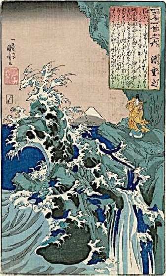

Ogura Hyakunin Isshu
#1. 天智天皇 Emperor Tenji (626-672) was the 38th Emperor of Japan. After overthrowing the Soga clan, he implemented the Taika reforms, moved the capital to Omi (Shiga Prefecture), and reigned as one who sincerely cared about his people, sympathizing, as here, with the peasants.
| 秋の田の | In the autumn rice field |
| かりほの庵の | temporary harvest hut, |
| 苫をあらみ | because of the loose rush-mat roof, |
| わが衣手は | my sleeves are |
| 露に濡れつつ | becoming wet from the dew. |

【秋の田の】 autumnal rice field.
【かりほの庵の】 かりほ is a kake-kotoba meaning ‘harvested grain’ (刈穂) and ‘harvest hut’ (仮庵); かりほ のいほの also enhances the rhythm by repeating the two syllables (hono).
【苫をあらみ】 とま ‘sedge mat’ あ らい ‘rough, loose.’ Noun を Adj み gives the reason. Elision: tomawarami
【わが衣出は】 が indicates possession; ころもで is a ka-go meaning ‘sleeves.’
【つゆにぬれつつ】 [(ぬる wet 下用)(つつ Continuative)] ‘keeps getting wet’ from the dew dripping through the roof.
Commentary: This poem alludes to an occasion on which the Emperor was helping farmers by scaring away birds as they harvested the crop. In a sudden rain shower, he sought shelter in a make-shift hut, thatched only with coarse rushes which afforded little protection. The slow, quiet dripping of the dew from the roof contrasts with the sweat of the farmers harvesting the rice. Mindful of their difficult labor, the Emperor sympathizes with the peasants.
#2. 持統天皇 Emperor Jitō (645-702), daughter of Emperor Tenji and 41st Emperor of Japan, ruled after her husband, the Emperor Tenmu, had died. At that time, smooth transition in the seasons was attributed to the wise rule of the Emperor. So, the depiction of summer arriving after spring has passed conveys a sense of hopefulness and satisfaction with the reign.
| 春過ぎて | Springtime having passed, |
| 夏来にけらし | summer seems to have arrived. |
| 白妙の | The snow-white |
| 衣干すてふ | robes are being dried, they say, |
| 天の香具山 | on celestial Kaguyama. |
【春過ぎて】 [(すぐ pass 上用)( つ Perfect 下用)]
【夏来にけらし】 [(く come カ 用)(ぬ Perfect ナ用)(けらし=け るらし Past Conjecture)]
【白妙の】 白妙 is a makura-kotoba for white objects such as snow.
【衣干すてふ】 (ほす dry サ終); てふ = といふ ‘they say’ since the practice had been discontinued. (い ふ say 四終)
【天の香具山】 Legend has it that Kaguyama descended from the sky, hence the 天の in front of 香具山; taigen-dome.
Commentary:
The white robes, a symbol of freshness and invigorating spirit, are the vestments of the shrine that priestesses used during summer Shinto rituals. Moreover, the sincerity of one’s behavior is said to be revealed by wetting clothes with holy water then drying them. The hill lies southeast of Nara and could be seen from Emperor Jito’s palace. This poem alludes (honka-dori) to one in Manyoshu, varying only with きにけらし for きたるらし and ほすて ふ for ほしたり.
The poets of #1 and #2 (Emperors Tenji and Jitō) and of #99 and #100 (Emperors Gotoba and Juntoku) bear a parent-child relationship. #1 conveys Tenji’s sympathy with the hardships of the peasants, and #2 depicts Jito’s wise reign, while #99 and #100 have darker tones and meanings, giving an interesting contrast between the beginning and end of Hyakunin Isshu.
#3. 柿本人麿 Kakinomoto-no-Hitomaro (662-710), an orphan found at the base of a persimmon (柿) tree, was a court poet under Emperor Jitō and one of Japan’s four greatest poets along with Teika (redactor of HNIS), Sogi, and Basho. Many of his poems were based on his mourning for his wife.
| あしびきの | The lofty |
| 山鳥の尾の | mountain pheasant’s tail – |
| しだり尾の | (like a) drooping tail, |
| ながながし夜を | this long, drawn out night |
| ひとりかも寝む | must I sleep alone? |

【あしびきの】 Makura-kotoba for mountains, skillfully introduced into the mountain pheasant’s name.
【山鳥の尾の】 山鳥 pheasants
【しだり尾の】 (しだる droop ラ体); の = のような (like, as). The tail is a jo-kotoba for ながながし below.
【ながながし夜を】 ながし kake-kotoba ‘long’ (長) and ‘drift’ (流); よ kake-kotoba ‘night’(夜) and ‘life’(世); (ながながし very long シ ク体 [古い語法]/終)
【ひとりかも寝む】 か shows uncertainty and forms a kakari-musubi with ねむ;も emphasis. ねむ kake-kotoba 'enjoy together’(合歓) and ‘sleep’ [(ぬ sleep 下未) (む Speculation 四体)]
Commentary: This poem depicts a lonely night separated from one’s lover. The male copper pheasant, known for its long tail, was believed to part from its mate at night. The term “山鳥” calls to mind the plight of sleeping by oneself. The jo-kotoba describes a copper pheasant’s droopy, long tail and repeats the particle の four times to help the reader visualize the deep, lonely night. The lengthy jo-kotoba also symbolizes this loneliness. Line 4: ‘long night’ or ‘drifting life’ and the next phrase convey the writer’s emotion by asking, “must I sleep alone through this long, drawn out night?” It is here that the poet expresses sorrow at spending the night alone. This phrase alone would have been enough for the purpose of a love poem, but the visual image of the copper pheasant’s long, droopy tail elicits the reader’s emotion and sympathy even more strongly.
#4. 山部赤人 Yamabe-no-Akahito (700-736), was a Nara court poet who composed many of his works during journeys with Emperor Shōmu.
| 田子の浦に | On Tago Bay |
| うち出でてみれば | going out to take a look |
| 白妙の | on pure-white |
| 富士の高嶺に | Fuji’s high peak |
| 雪は降りつつ | snow keeps falling. |

【田子の浦に】 Tago Bay in Kampara, Shizuoka City.
【うち出でてみれば】 [(出づ emerge 下用) (つ Perfect 下用)] [(見 る see 上一已) (ば Resultative)] “when I go out to look.” Elision: uchidetemireba.
【白妙の】 白妙 is a makura-kotoba for white objects such as clouds and snow.
【富士の高嶺に】 “On Mount Fuji’s high peak”
【雪は降りつつ】 [(降る fall 四用) (つつ Continuation)]
Commentary:
This poem portrays a scenic outlook and depicts the wonderful moment when obstructions evaporate and one’s view suddenly opens up to the ocean and Mount Fuji. Its expanse contrasts the blue sky and ocean with Fuji’s perfectly white lofty peak.
Yamabe’s original in Manyoshu Volume 3:318 is a han-ka (田子の浦ゆうち出 でてみれば真白にぞ不尽の高嶺に雪は降りける). Both the chō-ka (long poem) and the han-ka suggest that the white snow on Mount Fuji is not just a beautiful scene, but also a symbol of divine sublimity (kami). In the past, Mount Fuji was worshiped as a nature god before whom humans were compelled to bow down in reverence.
#5. 猿丸大夫 Sarumaru Daifu (fl. 705-718?) was a Heian waka poet, if there actually was such a person.
| 奥山に | In the secluded mountains |
| 紅葉踏み分け | treading through the autumn leaves |
| 鳴く鹿の | the call of a stag – |
| 声聞く時ぞ | when I hear its voice |
| 秋は悲しき | autumn is sad. |

【奥山に】 おく ‘secluded’
【奥山に】 There is some ambiguity over whether a person or a deer is treading through the leaves. [(ふむ tread 四用) (わく divide 下用)]
【奥山に】 In the autumn, a stag usually gives out a mating call, which implies a yearning for a wife or lover. (鳴く cry 四体)
【声聞く時ぞ】 ぞ emphasizes ‘sad’ and forms a kakari-musubi with か なしき below. (聞く hear 四体)
【秋は悲しき】 は distinguishes its subject from other less significant subjects. Here it means ‘more than other seasons, autumn feels sad.’ (悲 しき sad シク体)
Commentary: This poem portrays a beautiful scene, in which a lonely stag, as he treads through the colorful, fallen autumn leaves, calls for his mate. As the poet, also presumably walking through the autumn leaves, hears the cry, he is overwhelmed with sadness. In Chinese poetry, “秋悲 (autumnal melancholy)” derives sadness from seeing withering plants in the autumn. Japanese poets also depict autumn as a melancholy time of the year, while farmers see autumn as the busy harvest season preceding the idleness of the long winter. Beyond the loneliness, there is also a sublime serenity, the peace of mind that many find in aloneness. For aristocrats unable to enter the priesthood or to live in the secluded mountains, waka served as a means to experience life as an ascetic.
#6. 中納言家持 Chūnagon Yakamochi (718-785), was a Nara poet of the warrior-bureaucrat Otomo clan. Chūnagon is a high bureaucratic position. He is said to have been one of the final editors of Manyoshu.
| 鵲の | On Magpie |
| 渡せる橋に | Crossing Bridge |
| 置く霜の | gathered frost – |
| 白きを見れば | when I see how white |
| 夜ぞ更けにける | I feel the night is slipping away. |

【鵲の】 Magpies are a symbol of happiness in China. The magpies join their wings to form a bridge.
【渡せる橋に】 The Milky Way. は し is a kake-kotoba: bridge (橋) and stairway (階) [(渡す cross 下未) (る Potential ラ体)]
【置く霜の】【白きを見れば】 Frost forms just before day break. It is a metaphor (mitate) for the cold shining stars in the winter night sky. (置く place 四体)
【白きを見れば】 [(見る see 上一已) (ば Resultative)]
【夜ぞ更けにける】 ぞ is for emphasis and forms a kakari-musubi with ふけにける. [(更く pass 下 用) (ぬ Past ナ用) (ける Exclamation ラ体)]
Commentary: Stars in the winter transforming into hoar frost – what a magical moment! This poet uses just 31 syllables to describe a magnificent winter wonderland in the sky, while he laments that the night has almost passed. In Chinese legend, the Weaver (Vega) is only permitted to meet her husband the Herdboy (Altair) on the seventh day of the seventh lunar month on a bridge formed by flights of magpies that take pity on them. Magpie Bridge is a metaphor (mitate) for the stairway to the Imperial Palace in Kyoto. The Imperial Court is also often compared to the celestial world. Guarding the Palace late at night and seeing the frost-covered stairway, the poet thinks to himself that the night is passing, and maybe it is just like that on the bridge in the sky.
#7. 安部仲麿 Abe-no-Nakamaro (701-770), was a waka poet, administrator, and scholar in the Nara period. At 16, he went to China, where he passed the civil-service examination and took the position of a Governor- General. He tried to return to Japan but a shipwreck forced him to stay in China for the remainder of his life.
| 天の原 | The expanse of sky – |
| ふりさけ見れば | being far off, I see |
| 春日なる | in Kasuga |
| 三笠の山に | in Kasuga |
| 出でし月かも | the rising moon! |
【天の原】 はら ‘wide plain’
【ふりさけ見れば】 “as I look into the distance.” (ふりさく act from afar 下用) [(みる see 上―已) (ば Resultative)]
【春日なる】 Kasuga Shrine in Nara was where the envoys prayed for a safe journey. (なる be at/in ナリ体)
【三笠の山に】 Mount Mikasa in Nara.
【出でし月かも】 か adds emphasis and forms a kakari-musubi with いでし. The poet is comparing the moon that he then sees in China with the moon that he watched rise over Mount Mikasa in Japan. [(出づ emerge 下用) (き Past 体)]
Commentary: The poem was written at a farewell banquet for Nakamaro in Mingzhou (present-day Ningbo, China) before he set off for Japan. Seeing the majestic moon rising in the sky, the poet was reminded of the same moon that rose over Mount Mikasa where he had prayed for a safe journey before he left Japan. After three decades, it was finally time to return to his mother country. Feeling nostalgic, Nakamaro composed this poem. The great Chinese poet Li Bai’s famous verse, “ 頭を挙げて山月を望み 頭を低れて故郷を思う” (“Raising my head, I gaze at the bright moon; lowering my head, I think of home.”) also captures this nostalgia.
#8. 喜撰法師 Kisen Bonze (9th century), a poet and Buddhist monk, was said to have lived on Mount Uji, (宇治) a homonym for sorrow (憂).
| わが庵は | My hut |
| 都の辰巳 | southeast of the capital |
| しかぞ住む | so I inhabit |
| 世をうぢ山と | this place, the Mount of Sorrow, |
| 人はいふなり | or so people call it. |

【わが庵は】 庵 is a humble reference to the poet’s home.
【都の辰巳】 都 refers to Kyoto. Southeast was located in between 辰 (たつ - ESE) and 巳(み - SSE).
【しかぞ住む】 しか ‘thus,’ not a deer (鹿). ぞ adds emphasis and forms a kakari-musubi with すむ. (住む live 四体)
【世をうぢ山と】 世 ‘world,’ ‘place’; うぢ is a kake-kotoba meaning a place (宇治) in Kyoto and ‘gloomy’ (憂). 山と is a kake-kotoba meaning “mountain” and Yamato, the ancient name for Japan (大和).
【人はいふなり】 なり implies hearsay. [(いふ say 四体) (なり be ラ終)]
Commentary: Legend has it that Kisen Bonze was in actuality a mountain wizard who made an elixir of immortality. Such stories add an aura of mystery to this poem as the reader tries to understand Kisen’s life in the mountains. Although people thought that Kisen lived a secluded life on the Mount of Sorrow because he couldn’t bear the hardship and sorrow of the outside world, Kisen was not only content with his tranquil and peaceful life, but also grateful for the worldly concern people had for him. This poem does not convey the loneliness of a recluse, but rather the contentment of a free and unrestrained life. Its ending sets a light and cheerful mood, with an image of Bonze Kisen unconcerned with worldly matters.
#9. 小野小町 Ono-no-Komachi (825-900), a famous waka poet, the adopted daughter of Ono-no-Takamura (#11) and renowned as a rare beauty, she specialized in complex erotic love poems. She is said to have ended a drought in 866 by her magical powers.
| 花の色は | The flower’s color |
| うつりにけりな | has sadly faded |
| いたづらに | pointlessly – |
| 我が身世にふる | so has my beauty faded away |
| ながめせしまに | as the long rain pours down. |
【花の色は】 はな refers not only to flowers, but also beauty and youth.
【うつりにけりな】 [(うつる wither 四用) (に Past ナ用) (けり Past ラ 終)] な – Exclamation
【いたづらに】 ‘in vain’
【我が身世にふる】 世 kake-kotoba meaning ‘world’ and ‘relationships’; ふる also a kake-kotoba:‘fall’ (降) and ‘old’ (古).
【ながめせし間に】 ながめ kake-kotoba: ‘long rain’ (長雨) and ‘gaze at’ (眺). Hence, ‘while the rain falls on the world’ or ‘while lost in thought, my life passed by.’ (ながむ gaze at 下未) (す Causative 特用) (き Past 特終)
Commentary: This poem captures a beautiful woman’s lament over her withered beauty. The kake-kotobas intertwine tangible scenes with intangible feelings. The poet could be gazing long (ながめ) at the wilted flowers (花の色), while the spring long rain (ながめ) continues to fall (ふる) into the world (世), or the same set of words could refer to her lost beauty and sensuality (色) and her aged (ふる, 世) self, while she has been lost in her idle thoughts (ながめ, い たづらに), as if time has played a prank (いたづらに) on her. The similarity between raindrops/teardrops and the feeling of entrapment induced by the long rain relates rain to the sorrows of aging.
#10. 蝉丸 Semimaru (fl. 920) was either the son of Emperor Uda or servant of that Emperor’s eighth son. Legend also depicts him as a blind master of the biwa (a musical instrument), amusing himself in a hut in the hills near the Osaka Gate, on the edge of Lake Biwa.
| これやこの | This indeed is where – |
| 行くも帰るも | leaving and returning, |
| 別れては | or having parted |
| 知るも知らぬも | with known and unknown people |
| 逢坂の関 | they meet – this Osaka Gate |
【これやこの】 や adds exclamation.
【ゆくもかへるも】 People leave and return to Kyoto through this gate. (行く go 四体) (帰る return 四体)
【別れては】 わかれ, to part, contrasts with あふ to meet. [(別る part 下用) (つ Perfect 下用)].
【知るも知らぬも】 (知る know 四体) [(知る know 四未) (ず Negative 特体)]
【逢坂の関】 あふさか is a kake-kotoba meaning ‘meet’ and ‘Osaka.’ The gate was a well-known checkpoint as an important trade pass to and from the capital, Kyoto. taigen-dome.
Commentary: This poem depicts the vicissitudes of life as departure, encounter, and reunion are constantly happening at Osaka Gate. Three sets of phrases, 行く and 帰る, 知る and 知らぬ, 別れ and 逢ふ, form antitheses that describe the Osaka checkpoint. This poem reflects the Buddhist concept of 無常 (むじょう- ‘inconstancy’), the transient nature and evanescence of life and the idea that we meet only to part. It is as if one were looking down at a busy intersection in a city from a nearby building’s rooftop and saw the hustle and bustle of the world as people constantly pass each other by. Yet there is also a sense of serenity as one looks down at such scene as if it were a miniature of life of which the narrator is not part.
#11. 参議篁 Councillor Takamura (802-853), poet and scholar, was appointed assistant envoy to China in 834, but quarreled with the chief envoy and so was banished to the Oki Islands (Sea of Japan). Within two years, though, he returned to the capital and was promoted to the position of Councillor.
| わたの原 | That ‘Over the wide sea |
| わたの原 | crossing over to the eighty isles |
| 漕ぎ出でぬと | we have set off rowing,’ |
| 人には告げよ | please notify (my) people, |
| 海人の釣り舟 | o mariner’s fishing boat. |

【わたの原】 The ocean’s (海 – wata) plain (原 – hara).
【八十島かけて】 80 = ‘many’ [(か く aim at 下用)(つ Perfect 下用)]
【漕ぎ出でぬと】 The first three lines are the content of 告げ. Elision – ‘kogide’ [(こぐ row 四用) (いづ emerge 下用) (ぬ Perfect ナ終)]
【人には告げよ】 人 refers to family and friends in Kyoto. 告げ conveys an imperative tone for a request. よ is an interjectory particle. (つぐ notify 四命)
【海人の釣り舟】 海人 means “seaman” and 釣り舟 is “fishing boat.” The poet addresses his request to the fishing boat. (つる fish 四用), taigen-dome
Commentary: This poem was composed as the poet was setting sail for the Oki Islands during his banishment. Shortly before departure for China as an assistant envoy, the author discovered that the chief envoy Fujiwara-no-Tsunetsugu had replaced his own damaged ship with that of the author, whereupon the author wrote a satirical poem called “Saidō no Uta,” which irritated Emperor Saga, who exiled him to Oki Province. Before departing, Takamura requests a nearby fishing boat to announce his departure. This poem gives the impression not only of subtle desperation, but also of quiet dignity. Without knowing the background of this poem, one might think that the poem depicts a courageous sailor ready to set off on a great adventure.
#12. 僧正遍照 Bishop Henjō Munesada Yoshimune (816-890), waka poet, Buddhist priest, grandson of Emperor Kanmu and son of Dainagon Yoshimine-no-Yasuyo, Henjō served as a courtier of Emperor Ninmyō. After Emperor Ninmyō died, Henjō became a monk out of grief and rose to the position of Sōjō, a bishop.
| 天つ風 | Ye winds of heaven, |
| 雲の通ひ路 | that pathway of the clouds, |
| 吹き閉ぢよ | please blow it closed. |
| 乙女の姿 | The maidens’ figures |
| しばしとどめむ | might then tarry awhile. |

【天つ風】 つ = の
【雲の通ひ路】 The path to heaven from earth, whereby celestials ascend. (かよふ go through 四用)
【吹き閉ぢよ】 Blown closed so that the celestial maidens will stay. [(ふく blow 四用) (とづ close 上命)]
【乙女の姿】 乙女 “young ladies,” here refers to celestial maidens performing the Gosechi-no-Mai dance at the rice harvest festival.
【しばしとどめむ】 しばし “a short while.” む expresses the poet’s wish that they not go back to heaven quite yet. [(とどむ stay 下未) (む Conjecture 四終)]
Commentary:
Written before Henjō became a priest, this poem compares the five dancing maidens to celestial maidens. 雲の通ひ路 is the path by which the young maidens exit the room or stage, here compared to the path by which celestial maidens ascend to heaven. He is afraid they will fly back to Heaven and so requests the clouds to block their way, a fantasy that was probably shared by other witnesses to the dance as well.
The metaphor of the dancers as celestial maidens is said to have originated when Emperor Tenmu composed the following poem, supposedly as he was playing on a zither and the celestial maidens descended while dancing: 乙女ども 乙女さびすも 唐玉を袂にまきて 乙女さびすも.
#13. 陽成院 Emperor Yōzei (869-949) 57th Emperor of Japan, enthroned at the age of 9, he was prone to extravagant and violent habits, which eventually led to his dethronement at the age of 15.
| 筑波嶺の | The peak of Mount Tsukuba, |
| 峰より落つる | falling from the mountaintop |
| みなの川 | the Mina River - |
| 恋ぞつもりて | the growing love |
| 淵となりぬる | has become a deep pool. |
【筑波嶺の】 Tsukuba (Ibaraki) was believed to bestow marital harmony and bliss. During the Utagaki harvest rite, villagers sing and dance on their way up to the mountain peaks and often engage in free sexual activity. つく is a kake-kotoba meaning the place and accompany (付).
【峰より落つる】 (落つ fall 上体)
【みなの川】 The first three lines form the jo-kotoba for ふち.
【恋ぞつもりて】 こひ kake-kotoba “love” and “deep” (濃). ぞ forms a kakari-musubi with ぬる. [(つもる gather 四用) (つ Perfect 下用)]
【淵となりぬる】 淵 ‘deep pool’ [(なり become ラ用) (ぬ Perfect ナ 体)]
Commentary: Written for the third daughter of Emperor Kōkō, Imperial Princess Suishi, this poem expresses how Yōzei’s love towards Suishi has grown gradually into a deep passion, just as drops of water from the mountaintop collect to form streams, and eventually grow into rivers. The poem plays with the double meanings of sounds and words to combine the objective depiction of a natural scene with subjective personal emotions. Since Yōzei married Suishi afterwards, one might think that this love poem had a happy ending. However, for those familiar with Yōzei’s life, this poem, especially the mention of a “deep pool,” also conveys a sense of dark and deep-seated resentment. For physically assaulting his courtiers and violating taboos, Emperor Yōzei was deposed and lived 60 years as a reclusive Retired Emperor.
#14. 河原左大臣 Kawara-no-Sadaijin (822-895), also known as Minamoto-no-Tōru, was a poet and statesman. Born the son of Emperor Saga, he later acquired the surname Minamoto, became Sadaijin, or Minister of the Left, and lived in Kawara, Kyoto.
| 陸奥の | (Like) Michinoku’s |
| しのぶもぢずり | Shinobu mojizuri - |
| 誰ゆゑに | on whose account |
| 乱れそめにし | is this entanglement? |
| 我ならなくに | It is not on mine! |

【陸奥の】 The northeast of Japan.
【しのぶもぢずり】 Mojizuri is a kind of cloth with a tangled pattern. しのぶ here is a kake-kotoba meaning the place, the material, and also ‘to endure/conceal,’ implying a secret love. Lines 1 and 2 are the jo-kotoba for 乱れ in the 4th line.
【誰ゆゑに】 “Who is the cause?”
【乱れそめにし】 そめ is a kake-kotoba meaning ‘begin’ (初め) and ‘dye’ (染め). 乱れ and そめ are the en-gos for もぢずり. [(乱る tangle 下用) (そむ dye/begin 下用) (ぬ Perfect ナ用) (き Past 特体)]
【我ならなくに】 に implies objection = ‘it’s your fault!’[(なる be ナリ未) (なく Negative)]
Commentary: Associating the exotic image of the Michinoku print from the Tōhoku region with one’s emotional confusion, this poem depicts a man’s secret love skillfully, using the metaphor in the jo-kotoba and the double meanings of the kake-kotoba. This poem is cited in the first paragraph of The Tales of Ise to express the tangled love of a man having just celebrated his coming of age towards the young beautiful sisters of Kasuga: 春日野の若紫のすり衣しのぶの乱れ限り知られず ‘Lovely as the new purple flowers of Kasugano, you have imposed on me this boundlessly entangled heart that is just like the pattern on the Shinobu-zuri.’
#15. 光孝天皇 Emperor Kōkō (830-887) was the 58th Emperor of Japan, replacing Emperor Yōzei (#13). Before ascending to the throne, he was Tokiyasu Shinnō (Imperial Prince). He is supposed to have composed this verse for his grandmother.
| 君がため | For your sake |
| 春の野に出でて | going out to the spring fields |
| 若菜摘む | I pick the young herbs; |
| わが衣出に | on my sleeves |
| 雪は降りつつ | snow keeps falling. |
【君がため】 君 – you; が = の.
【春の野に出でて】 Elision: ‘harunononidete’ [(いづ emerge 下用) (づ Perfect 下用)]
【若菜摘む】 On the Festival of Seven Herbs on January 7, it is a custom to eat seven-herbs rice porridge, which is believed to bring longevity and health by expelling evil spirits. (つ む pick 四終)
【わが衣出に】 衣出 a ka-go for sleeves.
【雪は降りつつ】 Early spring snow, often regarded as a sign of good fortune in ancient Japan. [(降る fall 四用) (つつ Continuity)]
Commentary:
As written in the foreword of this poem in Kokin Wakashū, this poem was composed when Emperor Kōkō, still an imperial prince at the time, gave the green herbs to someone unknown. The receiver could be a lover, a courtier, or an ailing relative. Like Emperor Tenji whose sleeves become wet from the dew in a harvest hut in #1, the Imperial Prince went out to the fields in the snow as to pick herbs in the image of a sympathetic and ideal leader.
This poem portrays a beautiful scene by including the mellow images of the ‘spring fields,’ ‘young herbs,’ ‘sleeves,’ and ‘snow,’ and by contrasting the white of the snow with the green of the herbs. Such depictions of the colorful scenery and young herbs imbue liveliness – just what one needs when one has fallen ill. This also reflects the genuine and caring heart of the Emperor, as this will prove helpful in his future reign.
#16. 中納言行平 Chūnagon Yukihira (818-893) was a Heian poet and councilor (Chūnagon), a half-brother of Ariwara-no-Narihira (#17) and a grandson of Emperor Heizei. He was banished in 850 to Suma for a time.
| 立ち別れ | Having left, |
| いなばの山の | I go to Mount Inaba’s |
| 峰に生ふる | peak-grown |
| まつとし聞かば | pines, if I hear (of your waiting), |
| 今帰り来む | I will soon return. |

【立ち別れ】 having left. [(たつ stand 四用) (わかる leave 下用)]
【いなばの山の】 いなば is a kake-kotoba meaning the place (Tottori Pref.) and ‘if I go’ (往なば) [(いぬ go ナ未) (ば “if”)] Lines 2 and 3 are the jo-kotoba for まつ.
【峰に生ふる】 Elision – nyo (おふる grow 上体)
【まつとし聞かば】 まつ is a kake-kotoba meaning ‘pines’ (松) and ‘wait’ (待). し gives emphasis and means ‘poem’ (詩) and ‘death’ (死), while とし also means ‘year’ (年). (まつ wait 四終) [(きく hear 四未) (ば “if”)]
【今帰り来む】 [(かへる return 四 用) (く come カ未)]
Commentary:
Yukihira was departing Kyoto for his position as Governor in Inaba. The poem expresses his strong will to return, thus merging the dynamic aspects of life with the sadness of leaving.
The location and time implied in this poem include both the present (departing from Kyoto for Inaba) and the future (in Inaba longing to return to Kyoto). The poet has concisely expressed not only his unease at the upcoming departure, but also a hopeful anticipation of a future return. On a side note, this poem is often cited when one wishes for a parted friend or a lost pet to return.
#17. 在原業平朝臣 Ariwara-no-Narihira (825-880) was a waka poet, aristocrat, Ason (second highest of the eight hereditary titles), grandson of Emperor Hezei, half-brother of Ariwara-no-Yukihira (#16), and was said to be the model of the hero in the Tale of Ise.
| 千早ぶる | Even in the majestic |
| 神代も聞かず | age of the gods one never heard of |
| 龍田川 | the Tatsuta River (turning) |
| からくれなゐに | to brilliant crimson |
| 水くくるとは | tie-dying the water. |
【秋の田の】
【かりほの庵の】
【苫をあらみ】
【わが衣出は】
【つゆにぬれつつ】
Commentary:
#18. 藤原敏行朝臣 Fujiwara-no-Toshiyuki (880-907) Heian waka poet, nobleman, Ason.
| 住の江の | The Sumi Bay |
| 岸に寄る波 | shore where waves approach |
| よるさへや | even at night |
| 夢の通ひ路 | on the pathway in my dreams |
| 人目よくらむ | you seem to be hiding from people. |

【住の江の】 Sumiyoshi-ku, Osaka.
【岸に寄る波】 Lines 1 and 2 are the jo-kotoba for ‘night.’ (よる approach 四体)
【よるさへや】 よる is a kake-kotoba, meaning ‘approach’ (寄) and ‘night’ (夜); や adds exclamation and forms a kakari-musubi with らむ. (よる approach 四終)
【夢の通ひ路】 One sees a lover in dreams, for only then is there a ‘pathway’ for them to meet. (かよふ pass through 四体)
【人目よくらむ】 らむ “might be (hiding from people).” [(よく avoid 四終) (らむ Conjecture 四体)]
Commentary: This poem was composed from the perspective of a woman at a Poetry Contest held by Empress Hanshi in the Kampyō era (889-898 CE). In the Heian period, if one dreamt of a beloved person frequently, it was thought to mean that one’s love was requited. Women often worried about being deserted and betrayed by a lover or husband. Thus, it is not hard to imagine a situation wherein a woman involved in a secret love pondered what the absence of the man from her dreams suggested about his love interest in real life. This poem conveys the melancholy and frustration of the narrator as she wonders, “Why are you hiding from people, even in my dreams, when there is no chance of being seen by others?” This description leads the reader to associate the constantly changing waves with the emotional changes of a love-stricken heart and to attribute a dreamlike characteristic to the lovers. The Fujiwara family came to dominate the government as Emperors married almost exclusively from this family.
#19. 伊勢 Lady Ise (875-938) waka poet, daughter of the Governor of Ise, concubine to Emperor Uda and lover of Prince Atsuyoshi (a son of Emperor Uda), Lady Ise was a beautiful and talented lady loved by many.
| 難波潟 | Naniwa Marsh |
| 短き蘆の | short as the reeds’ |
| 節の間も | spacing between the nodes – |
| 逢はでこの世を | ‘Without meeting, this life |
| 過ぐしてよとや | shall pass,’ you said! |

【難波潟】 Near Osaka Bay, it epitomized bleak forlornness.
【短き蘆の】 蘆 a common reed 2 to 6 meters in height. The 1st and 2nd lines are the jo-kotoba for this poem. 短き modifies both 蘆 and 節 in the next phrase. (みじかし short ク体)
【節の間も】 ふし is a kake-kotoba for ‘node’ (節) and ‘lie down’ (臥) – time together, both being short.
【逢はでこの世を】 逢ふ implies intimacy. よ is a kake-kotoba meaning ‘life’ and ‘node’(節) and along with ふし(節) is an en-go of 蘆. [(あふ meet 四未) (で = ず Negative 特用 + つ Perfect 下用)]
【過ぐしてよとや】 や indicates exclamation: “you said (this life) would pass!” [(すぐす pass 四用) (つ Perfect 下用)]
Commentary: This poem captures Lady Ise’s exasperation towards a detached lover, as she asks in her poem, “Is not seeing each other, even though life is as short as the reeds and their nodes, what you were saying?” One might wonder who the man was that had so heartlessly dismissed Lady Ise, as Lady Ise was so charming and loved by sons of regents and men from the Imperial family alike. Nevertheless, the image of short reeds in the dreary tideland characterizes the passion and bitter resentment of Lady Ise, as do the skillful and creative usage of the jo-kotoba, kake-kotoba, and en-go in the poem.
#20. 元良親王 Prince Motoyoshi (890-943) was a waka poet and son of Emperor Yōzei (#13). His concubines include the daughter of Fujiwara-no-Kunitaka, Imperial Princess Shūshi, and Imperial Princess Kaishi. This poem addresses his recently discovered secret love affair with ex-emperor Uda’s favored consort, Fujiwara-no-Hōshi.
| わびぬれば | Already distressed |
| 今はた同じ | everything will be the same now |
| 難波なる | in Naniwa; |
| みをつくしても | even if it kills me |
| 逢はむとぞ思ふ | I still want to see you. |

【わびぬれば】 わび – ‘grieved’ [(わ ぶ grieve 上用) (ぬ Past ナ已) (ば Resultative)]
【今はた同じ】 はた – ‘again’
【難波なる】 Near Osaka, often referred to in waka as a dreary place. (なり=にある be in ラ体) (cf #19)
【みをつくしても】 みをつくし is a kake-kotoba meaning ‘exhaust oneself’ (身を尽くし) and ‘channel marker’ (澪標) [(つくす exhaust 四 用) (つ Perfect 下用)]
【逢はむとぞ思ふ】 ぞ implies intention and forms a kakari-musubi with おもふ. Elision ‘zomohu’ [(あ ふ meet 四未) (む Conjecture 四終)] (おもふ think 四体)
Commentary: Fujiwara-no-Hōshi was originally a court lady to Emperor Daigo, but her famed beauty later earned ex-emperor Uda’s favor and he took her. Prince Motoyoshi’s love affair with her, now revealed, could be seen as a treacherous act challenging the authority of the Emperor. Despite the danger, Prince Motoyoshi expresses his passion toward Hōshi, even though it might “exhaust” him; i.e., cause his death in this situation. His reference to a channel depth marker might also refer to the depth of his tears, or of his troubles.
#21. 素性法師 Monk Sosei (816-910) was the son of Sōjō Henjō (#12) and a waka poet who became a Buddhist priest along with his father after the death of Emperor Ninmyō.
| 今来むと | “I am coming right away,” |
| 言ひしばかりに | you just said; |
| 長月の | the late autumn |
| 有明の月を | waning moon |
| 待ち出でつるかな | has risen as I wait. |
【今来むと】 The speaker of 今来む is a man, though the poem is written from the perspective of the woman who is waiting. [(く come カ未) (む Conjecture 四終)]
【言ひしばかりに】 [(いふ say 四 用)(き Past 特体)]
【長月の】 長月 is when the nights are long in late autumn.
【有明の月を】 有明の月 is a moon still visible at dawn, after the full moon (16th day) of every lunar month.
【待ち出でつるかな】 つる + かな conveys his disappointment and forms a kakari-musubi with まちい でつる. [(まつ wait 四用)(いず emerge 下用)(つ Perfect 下体)]
Commentary: This poem is written from the perspective of a woman who has been waiting for a man all night. At the time when this poem was composed, men and women in relationships had distinct roles; namely, the woman waited patiently at her residence for the man to come. Here, rather than the man, the moon rises to greet her. ばかり has a similar effect: it was only because the man had made a promise that she waited for so long. However, this poem is not merely one of disappointment and sorrow. There is a nonchalance to the poem, as if the man’s absence enhances the poignancy of the moon in the sky, which she would not otherwise have noticed.
#22. 文屋康秀 Funya-no-Yasuhide was a Heian poet and the father of Funya-no-Asayasu (#37). His usage of words in poems is described as “skillful, but the words do not match the content, like a merchant dressed up in elegant clothes.”
| 吹くからに | Soon after it blows, |
| 秋の草木の | the autumn plants |
| しをるれば | wither, so |
| むべ山風を | I see why the mountain wind |
| あらしというらむ | is termed a wild storm. |
【吹くからに】 からに ‘right after’ (ふく blow 四終)
【秋の草木の】 The autumn plants.
【しをるれば】 [(しをる wither 下已)(ば “because”)]
【むべ山風を】 むべ ‘I see.’ 山風 is a harbinger of the winter.
【あらしというらむ】 あらし is a kake-kotoba meaning ‘storm’ (嵐) and ‘devastated’ (荒); Combining 山 and 風 to produce 嵐 is an example of acrostic wordplay. [(い ふ say 四終)(らむ Conjecture 四 終)]
Commentary: Influenced by Chinese poets employing acrostic wordplay during the late Six Dynasties period, Japanese poets also started incorporating this into their poems. In the above poem, Yasuhide has depicted the wind (風) coming from the mountain (山) as so wild that it is like a devastating storm (嵐), so 山+ 風=嵐. Other examples include the following poem in Kokin Wakashū by Ki-no-Tomonori: 雪降れば木毎に花ぞ咲きにけるいづれを梅とわきて折らまし ‘Since the snow is falling, flowers are blooming on every tree, so I should distinguish which ones are the plum trees before breaking the tree branches’: 木+毎=梅. Other combinations such as 十+八+公=松 and 八+木=米 are used in 離合詩 (acrostics).
#23. 大江千里 Ōe-no-Chisato (fl 889-923) was a Heian scholar and poet and the nephew of Yukihira (#16) and Narihara (#17). Many of his poems were inspired by Chinese poetry.
| 月見れば | As I look at the moon |
| 千々にものこそ | countless things |
| 悲しけれ | make me sad |
| わが身ひとつの | though not for me alone |
| 秋にはあらねど | has the autumn come. |
【月見れば】 見れば indicates fixed conditions. [(みる see 上已)(ば Resultative)]
【千々にものこそ】 こそ adds emphasis and forms a kakari-musubi with 悲しけれ in the following line.
【悲しけれ】 (かなし sad シク已)
【わが身ひとつの】 一人 was changed to ひとつ in this poem to correspond to and contrast with 千々 に in the second line. ‘Not’ is from the next line.
【秋にはあらねど】 ‘Although the autumn has not come for me alone’. Elision ‘aki ni warane do’[(あり be ラ未)(ず Negative 特已)(ど Contradictory)]
Commentary: This poem is based on a verse in the poem ‘Yanzi-lou’ (‘Pavilion of Swallows’) composed by the famous Chinese poet Bai Juyi: 燕子楼の中霜月の夜 秋来たりてただ一人のために長し ‘A frosty moonlit night in the Pavilion of Swallows, the autumn is dragging on for me alone,’ which describes the patient devotion of Director Zhang’s lover, even after he has passed away. Therefore, instead of the poet’s own emotions, #23 is more about the woman’s feelings as depicted in Bai Juyi’s poem. However, ‘Pavilion of Swallows’ only focuses on the sadness of one person, while Chisato’s poem has a certain universality that could apply to anyone. The association of the moon or autumn with sad emotions was widely accepted in Heian literature. The author even works in some Chinese-style parallelism with "moon"-"body" and "thousands"- "one".
#24. 菅家 Sugawara-no-Michizane (845-903) (also know as Kanke – “House-of-rushes”) was a poet, scholar, and politician, favored until the passing of his patron, Emperor Uda, then demoted to a minor official post at Daizafu. He is now revered as the Shinto god of learning.
| このたびは | This trip |
| 幣も取りあへず | even the offering was not brought; |
| 手向山 | Mount Tamuke - |
| 紅葉の錦 | brocades of crimson leaves |
| 神のまにまに | left to the whim of the god. |

【このたびは】 たび is a kake-kotoba meaning ‘travel’ (旅) and ‘time’ (度)
【幣も取りあへず】 ぬさ colored cotton strips inscribed with prayers to Hachiman, presented as one embarks on a trip. Elision: nusa mo torya ezu [(とる take 四用)(あふ bear 下未)(ず Negative 特終)]
【手向山】 たむけ is a kake-kotoba meaning the mountain and ‘offering’ (手向)
【紅葉の錦】 The leaves substitute for the brocade to be offered.
【神のまにまに】 まにまに means “at the mercy of...,” so this segment means ‘please accept this offering and grant us safe travel.’
Commentary: Michizane, recently made Minister of the Right, composed this poem when accompanying Retired Emperor Uda to a temple on Mount Tamuke prior to a hunting expedition. As to why the offering had been left behind, one explanation is that by etiquette, Michizane would not have been allowed to present his offering at the same time as the Emperor. Alternatively, perhaps the offering was left behind due to their haste. By presenting the crimson autumn leaves as tribute, the poet portrays a magnificent scene in which the myriad autumn leaves on the mountain—not just the normally pre-made strips of nusa—are offered to the gracious and mighty god. This image glorifies the deity’s power to control the nature and grant the Retired Emperor and his entourage safe travel.
#25. 藤原定方 Fujiwara-no-Sadakata (873-932) was the Sanjō-no-Udaijin (Minister of the Right of Sanjō) and father of Asatada (#44).
| 名にし負はば | If the name is accurate - |
| 逢坂山の | like the Rendezvous Slope |
| さねかづら | Clinging Vine - |
| 人に知られで | unknown to others |
| くるよしもがな | I hope I can get to you. |

【名にし負はば】 ‘If bearing the name’; し adds emphasis. Elision ‘shyo.’ [(おふ bear 四未)(ば “if”)]
【逢坂山の】 逢坂山 is an uta-makura, a mountain checkpoint between Kyoto and Shiga. あふ is also a kake-kotoba meaning a place and ‘meet’ (逢ふ).
【さねかづら】 さね is a kake-kotoba meaning ‘cling’ and ‘sleep together’ (さ寝). The first three lines are the jo-kotoba for くる in the last line.
【人に知られで】 [(しる know 四 未)(る Passive 下未)(で=ずて – ず Negative 特用, つ Perfect 下用)]
【くるよしもがな】くる is a kake-kotoba meaning ‘come’ (来) and ‘spin’(繰) and the en-go for さねか づら. (く/くる come/spin カ/四体)
Commentary:
The double meanings of the many kake-kotoba might make the poem seem puzzling at first, but the double meanings all connect under one theme: romantic attraction to a woman. It is said that this poem was a gift from Sadakata to a woman, given with an actual climbing vine, sanekazura.
Like #22, in which the “storm” owes its name to its devastating power, this poem also demonstrates how names of places and objects were often used in Heian poems to trigger association with ideas and themes, some of which function as uta-makura. The image of the entwined winding vines of the “sleeping together” sanekazura gives the reader mental associations of a romantic encounter and tenacious love.
#26. 貞信公 Teishinkō (Fujiwara-no-Tadahira) (880-949), courtier, statesmen, politician, and kuge (Japanese noble) under Emperor Suzaku, he took over the Hokke branch of the Fujiwara clan in 909.
| 小倉山 | Mount Ogura – |
| 峰のもみぢ葉 | maple leaves on the ridge, |
| 心あらば | if having such an inclination, |
| 今ひとたびの | now one more time |
| みゆき待たなむ | please await an imperial visit. |
【小倉山】 A mountain northwest of Kyoto with spectacular autumn scenery where Fujiwara-no-Teika compiled this collection, the Ogura Hyakunin Isshu.
【峰のもみぢ葉】 autumn
【心あらば】 Elision ‘kokoraraba.’ [(あり be ラ未)(ば “if”)]
【今ひとたびの】 “(Await an imperial visit) one more time.”
【みゆき待たなむ】 みゆき ‘imperial visit.’ なむ expresses a wish or a desire that the leaves await the Emperor. [(まつ wait 四未)(な む Optative)]
Commentary: Retired Emperor Uda was so impressed by the autumn scenery on Mount Ogura that he recommended that his son, Emperor Daigo, visit the mountain. Tadahira agreed to compose this poem as an invitation to Daigo. Like #24, this outing most likely occurred after a hunt, was composed by an attendant of a Retired Emperor, and red maple leaves are mentioned. Furthermore, Tadahira was likely to have been implicated in his older brother Tokihira’s quarrel with Sugawara-no-Michizane (#24). After Michizane’s demotion, Tokihira died, allegedly due to Michizane’s revengeful ghost. Tokihira’s death led to Tadahira’s becoming leader of the Fujiwara clan. Therefore, this poem not only reflects the harmonious interrelations between an Emperor, a Retired Emperor, and a courtier and their appreciation towards the nature, but might also suggest that Teika (redactor of HNIS) was aware of the power struggle involved.
#27. 中納言兼輔 Fujiwara-no-Kanesuke (877-933), or Chūnagon (Councilor) Kanesuke, was a Heian poet and nobleman and the grandfather of Murasaki Shikibu (#57).
| みかの原 | (Across) the plain of Mika |
| わきて流るる | gushing flows |
| いづみ川 | the Izumi River; |
| いつ見きとてか | when could I have met you |
| 恋しかるらむ | that I am so smitten? |
【みかの原】 Near Kyoto
【わきて流るる】 わき is a kake-kotoba meaning ‘divide’ (分) and ‘gush forth (湧), and is an en-go for いづみ. Hence ‘it flows gushing and dividing.’ [(わく gush/ divide 四 用)(つ Perfect 下用)](ながる flow 下体)
【いづみ川】 いずみ is a kake-kotoba also meaning ‘spring.’ The first three lines are the jo-kotoba for いつ見き, which also echoes いづみ.
【いつ見きとてか】 とて=という; か forms a kakari-musubi with こひ しかららむ in the next line [(みる see 上―用)(き Past 特終)]
【恋しかるらむ】 [(こひし beloved シク体)(らむ Conjecture 四体)]
Commentary: Putting the phrases in their correct orders and the kake-kotoba together, this poem can be translated as “Like the “izumi” River, which flows as it gushes forward and divides the plain of Mika, when (itsu-mi) did we ever see each other that I am so love-struck?” The verses skillfully combine the flowing streams of Mika Plain with a yearning emotion, unfolding innocent first love.
#28. 源宗于朝臣 Minamoto-no-Muneyuki (?-983) was a waka poet, nobleman, and the grandson of Emperor Kōkō (#15).
| 山里は | The mountain hamlet, |
| 冬ぞ寂しさ | winter isolation |
| まさりける | grows deeper; |
| 人目も草も | men and grass |
| かれぬと思へば | have all withered away. |
【山里は】 山里 often refers to the picturesque mountain villas on the outskirts of the capital.
【冬ぞ寂しさ】 ぞ adds emphasis, implying that “of all seasons, winter is especially lonesome” and forms a kakari-musubi with まさりける.
【まさりける】 [(まさる increase 四 用)(けり Exclam ラ体)]
【人目も草も】 め is a kake-kotoba meaning ‘eye’目 and ‘sprout’ (芽) and serve as an en-go for ‘grass.’
【かれぬと思へば】 かれ is a kake-kotoba meaning ‘separate’ (離) and ‘wither’ (枯)Elision: tomoe [(かる wither/depart 下用)(ぬ Perfect ナ 終)][(おもふ think 四已)(ば ‘because’)]
Commentary:
As winter arrives, the mountain village becomes even lonelier as there are neither visiting guests nor grass. The absence of people and the withered plants also symbolize the natural tendency towards deterioration and death of people and nature, like the final days before death. The model for this poem was written by Fujiwara-no-Okikaze: 秋くれば虫とともにぞなかれぬる人も草葉もかれぬと思へば. However, unlike Okikaze’s poem, which describes a lonely autumn, #28 chooses winter instead to heighten the sense of forlornness created by the absence of people and the withering vegetation. Occult aesthetics and spiritual occurrences in waka poems were best delivered through winter as a medium to a quiescent and monochrome world.
The Minamoto family sprang from Emperor Seiwa (856-877) and established the Kamakura Shogunate in 1185, ending direct Imperial rule.
#29. 凡河内躬恒 Ōshikōchi-no-Mitsune (859-925) was an early Heian administrator and waka court poet. Mitsune and Ki-no-Tsurayuki (#35) are two notable poets involved in the compilation of Kokin Wakashū.
| 心あてに | By chance |
| 折らばや折らむ | I would pluck one, were I to try; |
| 初霜の | since the first frost's |
| 置きまどはせる | falling makes indistinguishable |
| 白菊の花 | flowers of white chrysanthemum. |
【心あてに】 ‘Guessing’; Elision ‘kokorateni.’
【折らばや折らむ】 や implies doubt and forms a kakari-musubi with を らむ [(をる pluck 四未)(ば “if”)(む Conjecture 四体)]
【初霜の】 The first frost of the year usually occurs during late autumn.
【置きまどはせる】 置き refers to the falling of the frost, indistinguishable from the white chrysanthemum. [(おく place 四 用)(まどはす confuse 四未)(す Causative 特未)(る Passive 下終)]
【白菊の花】 Taigen-dome - using a noun to end a poem was a popular figure of speech to create a lingering image.
Commentary: Chrysanthemums were originally imported from China as medicinal plants and were first written about in Kokin Wakashū. They have become the national emblem of Japan and were adopted as the imperial crest (hence the Japanese imperial dynasty is termed “Chrysanthemum Throne.”) In this poem the hoar frost is described as hardly distinguishable from the white petals of the chrysanthemum. This comparison, mi-tate (見立て), captures the elegant figures of white chrysanthemums through the clear, shiny, and refreshing characteristics of the first cold hoar frost. With the inversion of word order in this poem, “flowers of the white chrysanthemum” is put at the very end of the poem to emphasize its exquisite subject.
#30. 壬生忠岑 Mibu-no-Tadamine (860-920) was one of the compilers of Kokin Wakashū. His son Mibu-no-Tadami (#41) was also a distinguished poet.
| 有明の | The waning moon |
| つれなく見えし | appears indifferent; |
| 別れより | since parting, |
| 暁ばかり | only the dawn, |
| 憂きものはなし | nothing else is as sad. |
【有明の】 有明 refers to the moon still visible in the sky at dawn.
【つれなく見えし】 The moon’s indifference adds to that of the lady from whom the narrator has parted. [(つれなし indifferent ク用)][(みゆ seem 下用)(き Past 特終)]
【別れより】 より ‘since’ or ‘than’
【暁ばかり】 暁 ‘dawn’ and ばかり correlates with なし in the next segment, meaning “there is no...like...”
【憂きものはなし】 うき ‘gloomy’ ‘There is no other moment as gloomy as dawn.’ (うし sad ク 体)(なし not be ク終)
Commentary: When Emperor Go-Toba asked Fujiwara-no-Teika and Ietaka for a distinguished poem from Kokin Wakashū, both recommended this poem. The common interpretation is a saddened man returning home at dawn after parting from his indifferent lover, with an association between the coldness of the lady and the coldness of the waning moon. Dawn refers to the general time a man returns from his lover’s residence. The waning moon is often visible in the eastern sky at daybreak, appearing larger and bleaker since it is low on the horizon. However, Teika commented that “it is only the waning moon that appears to be cold, not the lady.” Therefore, Teika sees the cold moon as a contrast to the passionate night the man has spent at the lady’s residence instead of a comparison. Whether it is a contrast or a similarity between nature and the human world, this famous poem provides a vivid night scene and leaves the reader room to interpret the situation.
#31. 坂上是則 Sakanoue-no-Korenori (fl. 908) was an early Heian waka poet, though he was best known as a champion at hacky-sack.
| 朝ぼらけ | Dawning twilight – |
| 有明の月と | with the waning moon |
| みるまでに | one might think |
| 吉野の里に | on the village of Yoshino |
| 降れる白雪 | is falling – white snow! |
【朝ぼらけ】 When light first appears in the sky before sunrise.
【有明の月と】 The moon still visible in the sky at dawn.
【みるまでに】 (みる think 上―終)
【吉野の里に】 Yoshino – mountain village near Nara known for its cherry blossoms.
【降れる白雪】 Ending the poem with a noun is taigen-dome, intended to create a lingering imagery. The comparison of moonlight to snow is a mi-tate. [(ふる fall 下未)(る Natural 下終)]
Commentary: Upon first seeing a moonlit yard during the winter, one might mistake it for a snow-covered scene, as in Chinese poet Li Bai’s famous verse, “牀前月光を看る 疑うらくは是地上の霜かと (The bright moonlight before my bed, could it be hoar frost on the floor?)” This poem was composed in the winter of 908 when Korenori was proceeding to his new appointment in Yamato Province. It is said that he composed this poem after waking up in a lodging near the mountains in Yoshino at dawn and was impressed by the snowy scene outside. Yoshino is a place where many Emperors built imperial villas, so to residents in the capital Yoshino is a detached village. Therefore, rather than with loneliness, a snow-covered Yoshino village is more strongly associated with time immemorial and peaceful quiet. In addition, in the poem Yoshino is adorned by a blanket of moonlight as if the sleeping village would remain forever in such tranquility.
#32. 春道列樹 Harumichi-no-Tsuraki (?-920) was a Heian poet who graduated from the Imperial University in 910, but died ten years later before he was able to proceed to his post as Governor in Iki province.
| 山川に | On a mountain stream |
| 風のかけたる | a wind-built |
| しがらみは | dam |
| 流れもあへぬ | impedes the flow |
| 紅葉なりけり | made of maple leaves. |
【山川に】 On a mountain stream
【風のかけたる】 [(かく build 下用)(たり Perfect ラ体)]
【しがらみは】 しがらみ(柵), is a barrier or dam made of wood or bamboo built across a river in order to regulate the water flow. しが is a kake-kotoba also meaning Shiga Temple.
【流れもあへぬ】 The maple leaves block the stream. [(あふ allow/bear 下未)(ず Negative 特体)]
【紅葉なりけり】 けり an exclamation, suggests that the poet was deeply moved by the view of the maple leaves. Mi-tate of maple leaves to a dam. [(なり be ナリ 用)(けり Exclam ラ終)]
Commentary: It was noted in Kokin Wakashū that this poem was composed at the Yamanaka checkpoint on Mount Shiga, on the mountain route starting from Kyoto and coming out at the village of Shiga (present-day Ōtsu City, Shiga Prefecture). This was the route taken by people paying homage at the Sūfuku Temple in Shiga. As a place with beautiful cherry blossoms falling like snowflakes every spring, Shiga is also famous as an uta-makura. The poet also implies the resistance of nature to the will of man. Inspired by this poem, the main compiler of Kokin Wakashu, Ki-no-Tsurayuki, composed the following poem: 年ごとにもみじ葉流す竜田川みなとや秋の泊まりなるらむ (Kokin Wakashū Autumn 2-311). ‘Every year maple leaves flow along the Tatsuta River, the estuary where the maple leaves blanket the stream is a harbor for autumn.’
#33. 紀友則 Ki-no-Tomonori (850-904) was an early Heian waka poet, cousin of Ki-no-Tsurayuki (#35), and compiler of Kokin Wakashū.
| 久方の | On a bright |
| 光のどけき | sunlit, calm |
| 春の日に | spring day – |
| しづ心なく | with hearts untranquil |
| 花の散るらむ | the cherry blossoms scatter. |
【久方の】 A makura-kotoba often used for the sun, Emperor, etc, here associated with 光 in the second line, also carrying a nuance of tranquility.
【光のどけき】 (のどけし calm ク 体)
【春の日に】 On a spring day
【しづ心なく】 しづ心 calm. ‘Heart’ here refers to the heart of a flower, since the poet is personifying the flowers in this poem.
【花の散るらむ】 花 here refers to cherry blossoms. [(ちる scatter 四 終)(らむ Conjecture 四終)]
Commentary: The headnote of this poem in the Kokinshū says it is composed “on the falling of the cherry blossoms.” The restlessness of the cherry blossoms contrasts with the peacefulness of a sunny day in spring. This could also be a contrast between eternity and an instant, or might also imply that even eternity (imperial power) is constantly changing. Even though falling petals suggest decay and sadness, the falling blossoms are described as a somewhat incongruent but beautiful scene on a peaceful day in spring. Also, the repetition of “ha” column syllables (久方, 光, 春の日,花) and the four の’s create unique pauses in the rhythm that the reader can visualize as a sharp transition from the peaceful scene of a sunny day in spring to the scattering cherry blossoms. Perhaps it is not the cherry blossoms that lack placid hearts, but the people watching the falling cherry blossoms, or are the people watching the scattering cherry blossoms concerned for the continued tranquility of the imperial reign?
#34. 藤原興風 Fujiwara-no-Okikaze (fl. 911) was a waka poet and Japanese noblemen.
| 誰をかも | Whom then |
| 知る人にせむ | Shall I befriend? |
| 高砂の | The Takasago |
| 松も昔の | pine from old-times |
| 友ならなくに | is not even a friend. |
【誰をかも】 Whom then? も adds emphasis; か forms a kakari-musubi with せむ in the next line.
【知る人にせむ】 知る人 here means “people who know me well.” (しる know 四体)[(す make サ未)(む Conjecture 四終)]
【高砂の】 An uta-makura. Takasago in Hyōgo Prefecture is famous for its pine trees by the shore.
【松も昔の】 Long-lived pine trees.
【友ならなくに】 “Though (the pine tree) is not a friend (from the old days).” [(なり be ナリ未)(ず Negative 特終)]
Commentary: In Zeami’s Noh play Takasago, an old couple appears from the mist on Takasago Bay in front of a Shinto priest. They are talking happily and sweeping up the needles under the renowned Takasago Pines which, along with the famed Suminoe Pine of distant Sumiyoshi, are called aioi-no-matsu, or “Paired Pines.” The old couple is the incarnation of the Paired Pines. They use a broom to sweep away trouble and a rake to gather good fortune. The couple and the pines in the legend of Takasago have come to symbolize the happiness of family life and longevity. The basic sense of this poem is that as the narrator’s friends have all passed away, even the pines cannot provide companionship for the narrator despite their longevity. This is a poem that ironically laments longevity as close friends pass away.
#35. 紀貫之 Ki-no-Tsurayuki (868-945) was a great poet, author, and courtier, chosen by Emperor Daigo as the principle compiler of Kokin Wakashū. He also wrote the Tosa Dairy, a travel account composed anonymously in hiragana, the style of women writers at that time.
| 人はいさ | People, well, |
| 心も知らず | I do not know their hearts; |
| ふるさとは | but this old village – |
| 花ぞ昔の | the flowers like in the old days, |
| 香に匂ひける | are fragrant still. |
【人はいさ】 いさ indicates a negation, here means “(not) well”
【心も知らず】 も adds emphasis. [(しる know 四未)(ず Neg 特終)]
【ふるさとは】 ふるさと a long-familiar place. は shows distinction.
【花ぞ昔の】 The flowers in contrast to the hearts of the people. ぞ adds emphasis and forms a kakari-musubi with にほひける.
【香に匂ひける】 匂ひ fragrant, bright, colorful. [(にほふ be fragrant 四用)(けり Past ラ体)]
Commentary: This poem is preceded by a headnote in the Kokin Wakashū: “There was a house where the poet stayed each time he made a pilgrimage to Hatsuse (Nara Prefecture), but had not been able to visit for some years. When the poet finally visited again, the house owner said ‘As you can see, your lodging is where it always was in the past,’ whereupon the poet broke off a branch from the plum tree planted there and composed this poem.” The house owner’s remark can be interpreted as a slightly annoyed comment about the poet’s lack of visit, though his lodging has always been there. In this context, the poet seems to mean: “I cannot fathom people’s hearts and I do not know whether you feel the same way towards me as in the past, but in this familiar village the plum blossom is as fragrant as ever.” As the flow of time gradually obscures one’s feelings, the reunion of two old friends or lovers, mixed with the spring sentiment and fragrant plum blossom scent, awakens the past and lingers in the simplicity of the nature.
#36. 清原深養父 Kiyohara-no-Fukayabu (dates unknown) was the grandfather of Kiyohara-no-Motosuke (#42) and the great-grandfather of Sei Shonagon (#62).
| 夏の夜は | This summer night |
| まだ宵ながら | still just getting dark |
| 明けぬるを | yet it's already dawning! |
| 雲のいづこに | So where in the clouds is |
| 月やどるらむ | the moon dwelling? |
【夏の夜は】 は emphasizes the subject – this summer night.
【まだ宵ながら】 After sunset and before dark.
【明けぬるを】 It has dawned. を means “because” and connects with the next line. [(あけ dawn 下用)(ぬ Perfect ナ体)]
【雲のいづこに】 いづこ where.
【月やどるらむ】 らむ indicates a conjecture, conveying the speculation that, “the moon is probably dwelling behind some clouds.” [(やどる 四終)(らむ Conjecture 四終)]
Commentary: This poem of a mere five lines consists of a number of cultural assumptions and insights into nature. The short duration of a summer night is the basis of the poet’s conjecture and the personification of the moon as someone “dwelling (やどる) among the clouds.” Another belief is that the moon “resides” in the western mountains, since it is always seen setting behind the mountains and hills in the west. We could interpret this poem as follows: “This summer night is so brief that the day has dawned already while it still seems like evening, leaving too little time for the moon to make it back to its western mountain home. Where in the clouds might the moon be dwelling then?” The poet has cleverly incorporated personification and his personal emotion to create a delightful image of the moon hurrying back home but needing to lodge behind the clouds momentarily as the sun rises, as well as the poet himself looking for the moon as if he wants to admire it once more before it can hide again.
#37. 文屋朝康 Funya-no-Asayasu (fl. 900) was the son of Funya-no-Yasuhide (#22).
| 白露に | In the glistening dew |
| 風の吹きしく | blown by the heedless wind |
| 秋の野は | this autumn field – |
| つらぬきとめぬ | unstrung |
| 玉ぞ散りける | pearls scatter around. |
【白露に】 しら emphasizes the cleanness and purity of an object.
【風の吹きしく】 [(ふく blow 四用)(しく do repeatedly 四体)]
【秋の野は】 は emphasizes the subject – the field in autumn.
【つらぬきとめぬ】 [(つらぬく string 四用)(とむ keep in place 下未)(ず Negative 特体)]
【玉ぞ散りける】 玉 ball, sphere, pearl, jewel, etc. Mi-tate likens the scattered dew blown by the incessant wind to pearls splattering from a broken string. ぞ adds emphasis and forms a kakari-musubi with ける which expresses excitement. [(ちる scatter 四用)(けり Exclam ラ体)]
Commentary: Strong winds are commonplace on autumn grasslands in Japan. As the wind blows incessantly, the shining dew or rain drops fall and scatter like unstrung pearls. Moreover, onomatopoeia of “し” in “白露に風の吹きしく” and of た sounds in “つらぬきとめぬ たまぞちりける” mimics the sound of the rain and wind, further bestowing upon the reader the sensation of the refreshing autumn air. Shining dew is also compared to pearls in the Kokin Wakashū and the famous Tale of Genji. Here are two examples: 浅緑糸よりか けて白露を玉にもぬける春の柳 (Henjō Kokin Wakashū Spring Volume 1-27) ‘twisting the light green thread that strung the shining dew drops together like pearls, this spring willow tree.’ Another of Funya-no-Asayasu’s poems, 秋の野に置く白露は玉なれやつらぬきかくる蜘蛛の糸筋 (Kokin Wakashū Autumn Volume 1-225), ‘Are the dew drops dotting the autumn fields not pearls? Weaving together those pearls on the leaves is the spider silk.’
#38. 右近 Lady Ukon (fl. 900) Poet and a lady-in-waiting to Onshi, the Empress of Emperor Daigo, she belonged to the Fujiwara clan. Her liaisons with Prince Motoyoshi (#20), Fujiwara-no-Atsutada (#43), Fujiwara-no-Asatada (#44), Fujiwara-no-Morosuke, and Minamoto-no-Shitagō are described in Yamato Monogatari (Tales of Yamato).
| 忘らるる | Forgotten, |
| 身をば思はず | I do not think of myself; |
| 誓ひてし | you made a promise – |
| 人の命の | that life of yours |
| 惜しくもあるかな | is what I pity. |
【忘らるる】 [(わする forget 四 未)(る Passive 下体)]
【身をば思はず】 身 ‘myself.’ は becomes ば after を. [(おもふ think 四未)(ず Negative 特終)]
【誓ひてし】 (You) having vowed. [(ちかふ swear 四用)(つ Perfect 下 用)(き Past 特体)]
【人の命の】 人の your
【惜しくもあるかな】 惜しく ‘precious’ conveys the narrator’s concern and sadness towards the man who will be punished by the gods for breaking his vow. かな adds emotion and forms a kakari-musubi with ある. Elision ‘maru.’ (をし pity シク用)(あり be ラ体)
Commentary: This poem is followed by this introduction in section 84 of Tales of Yamato: “This same lady (Ukon), after a certain gentleman had sworn in every possible way to the gods that he would never forget her, but still did, composed this poem and sent it to him.” Knowing this context, one could naturally see the poem as highly sarcastic towards the hypocrisy of the lover. The second half of the poem hints that Ukon’s neglectful lover will die now that he has abandoned her. The words appear threatening, yet they are composed in such a mild and subtle way that they fully demonstrate the narrator’s sorrow and sadness. It is speculated from evidence in Tales of Yamato that Ukon sent this poem to Fujiwara-no-Atsutada (#43). Coincidentally, Atsutada died at the early age of 38.
#39. 参議等 Councillor Hitoshi (880-951) was the great-grandson of Emperor Saga.
| 浅茅生の | The sparse blady grass, |
| 小野の篠原 | plain with its short bamboos, |
| 忍ぶれど | though I have concealed it, |
| あまりてなどか | it overwhelms me – why |
| 人の恋しき | do I love her so? |
【浅茅生の】 A makura-kotoba for the field in the next line.
【小野の篠原】 しの(はら) is the jo-kotoba for 忍ぶ in the next line due to the sound repetition しの(ぶれ).
【忍ぶれど】 しのぶれ is a kake-kotoba meaning ‘conceal/endure’ (忍ぶ) and ‘love’ (偲ぶ). [(しのぶ conceal 上已)(ど “although”)]
【あまりてなどか】 あまりて – overwhelming; など + か – why; か also forms a kakari-musubi with こ ひしき below [(あまる exceed 四 用)(つ Perfect 下用)]
【人の恋しき】 恋しき – beloved. (こひし beloved シク体)
Commentary: This poem alludes (honka-dori) to 浅茅生の小野の篠原しのぶとも人知るらめやいふ人なしに (Kokin Wakashū Love Volume 1-505), ‘The sparse blady grass, short bamboos of the plain – this hidden emotion, shall I let that person know of it? No I shall not, as there is no one to deliver it.” In contrast, lines 3-5 of #39 can be paraphrased as “I have concealed it, yet it overwhelms me – why do I love her so?” The jo-kotoba not only serves as a part of the wordplay, but also describes a desolate yet touching scene that contrasts with the narrator’s overwhelming affection and hints at the fruitless hidden love. The tall bamboos in a field of sparse blady grass reflect the narrator’s excessive affection. These expressions depict the confusion and towering passion one experiences in a secret love.
#40. 平兼盛 Taira-no-Kanemori (?-991) was a waka poet and Japanese nobleman of the Taira clan, a descendant of Emperor Kōkō (#15), and the father of Akazome Emon (#59).
| 忍ぶれど | Though I try to conceal it, |
| 色に出でにけり | in my countenance shows |
| わが恋は | my love; |
| 物や思ふと | ‘Are you thinking of something?’ |
| 人の問ふまで | people finally ask. |
【忍ぶれど】 [(しのぶ conceal/ endure 上已)(ど “although”)]
【色に出でにけり】 色 – face. けり adds the fear of discovery. Elision: ‘ironidenikeri’ [(いづ emerge 下 用)(ぬ Perfect ナ用)(けり Exclamation ラ終)]
【わが恋は】 My love.
【物や思ふと】 物 a vague subject. 物思ふ suggests “thinking about love and suffering from the thoughts.” や implies a question and serves as a kakari-musubi with おも ふ. (おもふ think 四体)
【人の問ふまで】 問ふ ‘ask,’ まで ‘until,’ ‘finally’ (とふ ask 四終)
Commentary: This poem and #41 are presented together in the beginning of Shūishū, an imperial anthology of Japanese waka, with the headnote “From a poetry contest of the Tenryaku Era,” referring to the Palace Poetry Contest in 960. #40 and #41 were the two finalists on the theme “secret love,” but the judge, Fujiwara-no-Saneyori, unable to decide on a winner, appealed to Emperor Murakami, who hummed this poem and decided the contest. Although in the modern sense, the narrator’s concern with people noticing his hidden emotions may appear to be innocent and exaggerated, this poem was composed during a time when societal reputation was highly regarded. There were even situations in which one would prefer death to revelation of a secret love (#89). Despite the fact that one was allowed to have his or her own choice in love relationships, this poem accurately depicts the passion as well as frustration of a secret love with someone of whom society might not approve. The Taira sprang from Emperor Kanmu (781-806) and fought the Minamoto for dominance in 1185.
#41. 壬生忠見 Mibu-no-Tadami (fl 900?) was a waka poet and nobleman, and the son of Mibu-no-Tadamine (#30).
| 恋すてふ | ‘He is in love,’ they say; |
| わが名はまだき | my reputation is already |
| 立ちにけり | determined – |
| 人知れずこそ | I have tried to keep it quiet, |
| 思ひそめしか | this affair has only just begun. |
【恋すてふ】 (す do サ終)(てふ=と いふ)
【わが名はまだき】 まだき already.
【立ちにけり】 As when one is found out. [(たつ stand 四用)(ぬ Past ナ 用)(けり Exclam ラ終)]
【人知れずこそ】 こそ forms a kakari-musubi with omohisomeshi [(しる know 下未)(ず Negative 特 終)]
【思ひそめしか】 しか ‘only just’ ‘I have only just begun to think of her.’ [(おもふ think 四用)(そむ begin 下 用)(き Past 特已)]
Commentary: 思ひ (“to think”) can refer to both 知れず (“No one knows”) and to そめ (“I just began to think about her”). The most common interpretation is: “The rumor of me being in love has already spread far and wide, even though I have only just begun to love her secretly so that she is unknown to others.” This was the poem that lost to #40 in the Palace Poetry Contest in 960, but it still gained great praise. In the Shasekishū, a collection of parables written during the Kamakura period, the poet Tadami was depicted as dying of depression and anorexia after losing the contest. Although the story is fictional and Tadami continued writing poetry, results of a poetry contest, such as the one mentioned here, were of great importance to poets at that time. #40 might have won the contest because of Emperor Murakami’s personal preference, but this poem has a more appealing tone of calm. One often has delicate and perplexed emotions at the beginning of an affair. This poem honestly depicts the consternation of being discovered.
#42. 清原元輔 Kiyohara-no-Motosuke (908-990) was a waka poet, nobleman, father of Sei Shōnagon (#62), grandson of Kiyohara-no- Fukayabu (#36), and one of the compilers of the Gosen Wakashū (Later Collection of Japanese Poems).
| 契りきな | We swore (to love each other) didn’t we? |
| かたみに袖を | while both our sleeves |
| しぼりつつ | we wrung continually, |
| 末の松山 | “Until the top of Matsuyama |
| 波越さじとは | is covered by waves,” as they say. |
【契りきな】 な expects an affirmative response. [(ちぎる swear 四用)(き Past 特終)]
【かたみに袖を】 かたみに mutually.
【しぼりつつ】 Sleeves wet from wiping away tear drops [(しぼる wring 四用)(つつ Continuation)]
【末の松山】 Uta-makura for a mountain in Miyagi unreachable bythe sea.
【波越さじとは】 Waves can never overcome Matsuyama (Ehime Prefecture). The 2nd to 5th lines modify the 1st line. [(こす cross 四 未)(じ Negative Conjecture)]
Commentary: This alludes to an anonymous poem: 君をおきてあだし心をわ が持たば末の松山波も越えなむ (Kokin Wakashū The Azuma Poems 1093). ‘If I ever have the heart to abandon you, may waves engulf Mount Suenomatsu.’ The headnote preceding this poem in Goshūi Wakashū says, “For the person whose lover has changed her mind.” な is like ね in modern Japanese as an invitation for the listener to respond and possesses an incredibly pitiful and despairing voice as if the narrator were begging and weeping. It is interesting to note that though both #42 and #38 describe one’s desolation after being abandoned, #42 is not nearly as caustic and bitter as #38, suggesting that the narrator is feeling more regretful about his lingering affection, than angry and spiteful towards the past lover’s changed feelings.
#43. 権中納言敦忠 Fujiwara-no-Atsutada (906-943) , also known as, Gon Chūnagon (Councilor) Atsutada, was known to be handsome, and appears in the Tales of Yamato with court ladies including Lady Ukon (#38).
| 逢ひ見 | Having seen you, |
| のちの心に | my feelings afterwards – |
| くらぶれば | if I compare them to |
| 昔はものを | those in the past – |
| 思はざりけり | I have never loved before. |
【逢ひ見ての】 逢ふ and 見る describe a lovers’ rendezvous. [(あ ふ meet 四用)(みる see 上―用)(つ Perfect 下用)]
【のちの心に】 のち after (the tryst).
【くらぶれば】 [(くらぶ compare 下 已)(ば “because”)]
【昔はものを】 もの romantic thoughts.
【思はざりけり】 The narrator realizes that his feelings before the rendezvous were nothing in comparison to now. [(おもふ think of/love 四未)(ざる Negative 特 用)(けり Past ラ終)]
Commentary: This poem was preceded by the headnote “Sent the next morning, after he had started visiting the woman.” It seems to be a poem by a man who feels that his previous love affairs pale in comparison with his current love, though some interpret this poem as one in which a man expresses doubts about their love, or some factor preventing the two lovers from meeting again. Another possibility is that the romantic liaison might have been opposed by either party’s family, so the agonizing frustration the narrator experiences now is much more intense and complicated than before the liaison.
#44. 中納言朝忠 Fujiwara-no-Asatada (910-966) , also known as Chūnagon (Councilor) Asatada, son of Fujiwara-no-Sadakata (#25), had many romantic episodes with women, including Lady Ukon (#38).
| 逢ふことの | Meeting, (it had been better) |
| 絶えてしなくは | if (we had) not (met) at all, |
| なかなかに | on the other hand, |
| 人をも身をも | her (indifference) and my (fate) |
| 恨みざらまし | would not be cause for resentment. |
【逢ふことの】 逢ふ rendezvous. (あ ふ meet 四終)
【絶えてしなくは】 絶えて ‘at all,’ also a kake-kotoba meaning ‘cease’ (絶). し emphatic. なくは and まし below indicate ‘if not ...then.’ – a counterfactual supposition. [(たゆ end 下用)(つ Perfect 下用)]
【なかなかに】 ‘on the contrary’
【人をも身をも】 も ‘both...and’
【恨みざらまし】 Contrary-to-fact. [(うらむ resent 上未)(ざる Neg 特 未)(まし Conj 特終)]
Commentary: The classification of this poem at the time of the poetry contest was “early love before a first meeting.” Later it was reclassified under “lovers that cannot meet again.” The highlight of this poem is the usage of a counter- factual supposition in depicting the narrator’s profound frustration and sadness in a way that is straightforward and easily understood. Under Teika’s interpretation, this poem can be paraphrased as “If we had never met at all, I would not be so resentful towards her indifference and my sorrowful fate.” The reason why the lovers cannot meet again is unclear. However, from the narrator’s resentment towards the woman, it is likely that the narrator is troubled by coldness and neglect from the one he loves. Whether it be that the woman has found a new love, or that she is purposely playing hard to get, this poem skillfully portrays the narrator’s delicate emotional state when his love is not fulfilled. It might be due to its focus on a regretful love, as in #43, that these two poems were placed next to each other.
#45. 謙徳公 Fujiwara-no-Koremasa (924-972) , also known as Kentokukō, was a waka poet, statesman, courtier, politician, and grandson of Fujiwara-no-Yoshitaka (#50).
| あはれとも | “How sad,” |
| いふべき人は | she would likely say, |
| 思ほえで | if I crossed her mind; |
| 身のいたづらに | dying for love in vain |
| なりぬべきかな | seems to be my fate. |

【あはれとも】 あはれ ‘pitiful.’
【いふべき人は】 [(いふ say 四 終)(べし Conjecture ク体)]
【思ほえで】 [(おもほゆ recall 下 未)(で=ずて:ず Negative 特用, つ Perfect 下用)]
【身のいたづらに】 ‘to die in vain.’
【なりぬべきかな】 end up (dying in vain). [(なり be ラ用)(ぬ Perfect ナ 終)(べし Conjecture ク体)]
Commentary: According to the headnote in Shuishū, this poem was composed for a woman who, despite having formed a social intercourse with the narrator, has not replied to the narrator’s amorous entreaties and has not seen him again. Therefore, this poem portrays the desperation and loneliness of a man who has so suffered from his love that he would rather die, yet doing so would probably not even be noticed by the woman. Additionally, the first three lines could also be interpreted as meaning that no one else would sympathize with or understand the narrator after knowing that his romantic pursuit has been unbearably futile. Born into a family of powerful politicians, Fujiwara-no-Koremasa possessed not only proficient scholastic ability, but also good looks. Therefore, it is not surprising that few people would believe that Koremasa encountered a failed love affair.
#46. 曾禰好忠 Sone-no-Yoshitada (dates unknown) served as a secretary in Tango Province (Kyoto). His poetic style was initially considered eccentric, and only later were his poems valued for their freshness.
| 由良の門を | The estuary of Yura |
| 渡る舟人 | a boatman flowing across |
| かぢを絶え | without an oar |
| 行くへも知らぬ | going he knows not where |
| 恋の道かな | the road of love. |

【由良の門を】 North of Kyoto, where two currents meet with turbulent tides.
【渡る舟人】 舟人 ‘boatman.’ (わた る cross 四体)
【かぢを絶え】 かぢ ‘paddles’ Lines 1-3 are the jo-kotoba for this poem. (たゆ end 下用)
【行くへも知らぬ】 Applies to a boat in the estuary and a person on the pathway of love. (ゆく go 四終) [(しる know 四未)(ず Negative 特 体)]
【恋の道かな】 道 ‘the way’ of love. Estuary, flow, boatman, oar, direction, and way are en-go. かな conveys an exclamation. Taigen-dome
Commentary: The 4th line not only expresses the emotion of the boatman who has lost his direction, but also conveys the concerns and worries of a man who is lost in love – they both share unease towards their hindered, wayward paths. The description of a boatman without a paddle in the estuary brings the intangible emotions surrounding love forcefully to the reader. The only point of contention in this poem is the 3rd line. Most commentators believe that かぢ refers to oar- like wooden tools and を is an object marker, so かぢを絶え means “having lost the oar.” Other commentators, possibly including Fujiwara-no-Teika, interpret かぢを as the noun which means “oar cord,” and under this interpretation かぢを絶え means “the oar cord is severed,” which yields the same result.
#47. 恵慶法師 Egyō Hoshi (fl. 970) composed this poem at Kawara-in, built in Kyoto by Minamoto-no-Tōru (#14), where he met with Kiyohara-no-Motosuke (#42), Minamoto-no-Shigeyuki (#48), and Yoshinobu (#49).
| 八重葎 | Tangled catchweed |
| 茂れる宿の | residence rampant with weeds |
| さびしきに | lonely |
| 人こそ見えね | I see no one |
| 秋は来にけり | autumn has arrived. |
【八重葎】 やへ ‘overlapping (vines),’むぐら ‘trailing plant,’ a metaphor for a desolate cottage.
【茂れる宿の】 (しげる grow 下体)
【さびしきに】 (さびし lonely シク 体)
【人こそ見えね】 こそ forms a kakari-musubi with みえね [(みゆ see 下未)(ず Negative 特已)]
【秋は来にけり】 けり a sudden realization. [(く come カ用)(ぬ Past ナ用)(けり Exclam ラ終)]
Commentary: The source of this poem, Shūi Wakashū, contains a foreword to this poem that says “At Kawara-in, people discuss the arrival of autumn at the desolate residence.” Kawara-in had been the birthplace of many works by great poets such as Ariwara-no-Narihira (#17). But after the death of Tōru, rumors about his haunting spirit and the flooding of the Kamogawa River led to Kawara-in being deserted. However, during Egyo Hoshi’s time, poets of refined tastes who cherished the residence gathered there once again to continue the production of poems. This group of poets consisted mostly of middle- or lower- class men, but who all shared profound appreciation and affection towards Kawara-in, though now dilapidated and derelict.
#48. 源重之 Minamoto-no-Shigeyuki (?-1000) was a waka poet and nobleman.
| 風をいたみ | In the fierce wind, |
| 岩打つ波の | like a wave battering the rocks, |
| おのれのみ | only I |
| くだけて物を | am shattered – |
| 思ふころかな | time for troubling thoughts. |
【風をいたみ】 いたし ‘extreme’ ‘を + み’ indicates a reason. Elision ‘kazyo.’
【岩打つ波の】 Lines 1-2 are the jō- kotoba of くだけて (うつ hit 四体)
【おのれのみ】 のみ ‘only’
【くだけて物を】 [(くだく break 下 用)(つ Perfect 下用)]
【思ふころかな】 ころ ‘time (for thinking)’ か adds emphasis and forms a kakari-musubi with おもふ. (おもふ think 四体)
Commentary: The waves shatter into water drops against the rock, yet the rock remains motionless, as if nothing has occurred. This scene also serves as a metaphor for the narrator’s romantic feelings crashing uselessly into pieces on the immovable and indifferent woman being pursued. So the first two lines (jo-kotoba) not only describe the waves beating on the rock, but also imply her neglect of the narrator. There is also assonance of the sound “mi,” in いたみ, な み, and のみ. It was trendy in poetry at the time to use the phrase “くだけて物 を思ふ (being shattered, a time to think)” to describe the intensity of one’s troubling thoughts. For example, Sone-no-Yoshitada (#46) composed the following poem: 山賤のはてに刈り干す麦の穂のくだけて物を思ふころか な (Sotanshū 135). It means “Just as the farmer cuts down the last wheat stem and mills it into powder, it shatters me, my thoughts.” Waves shattered by the unmovable rock here and the wheat stem smashed into powder in Yoshitada’s poem are both vivid metaphors of the narrator’s desperation and hurt feelings.
Kuniyoshi for #48
#49. 大中臣能宣朝臣 Ōnakatomi-no-Yoshinobu (921-991) cooperated in the compilation of the Gosen Wakashū. The attribution of this poem to Yoshinobu is disputed. His granddaughter is the famous Heian poetess Lady Ise.
| 御垣守 | Imperial court guard |
| 衛士のたく火の | sentinels’ watch-fire |
| 夜は燃え | burning through the night, |
| 昼は消えつつ | morning always puts it out – |
| 物をこそ思へ | thoughts of love. |
【御垣守】 Imperial gate guards
【衛士のたく火の】 衛士 ‘guards’ Lines 1 and 2 are the jō-kotoba for lines 3 and 4.(たく set (fire) 四体)
【夜は燃え】 (もゆ burn 下用)
【昼は消えつつ】 The 3rd and 4th lines convey the repetitive occurrence of the watch fire burning at night and being extinguished by day. The fire also symbolizes the narrator’s love. [(きゆ extinguish 下 用 )(つつ Continuative)]/p>
【物をこそ思へ】 物を思ふ means “to be lost in thought because of love.” こそ gives emphasis and forms a kakari-musubi with おもへ. Elision: monowokosomohe (おもふ think 四已)
Commentary: ‘Like the watch fire (hi) set by guards of the imperial court, which burns all night and is extinguished during the day, my thoughts of love (omohi) burn up my heart at night and leave me alone through the day.’ The jo-kotoba here (the guards’ watch fire) describes a natural scene, while the last line conveys the narrator’s emotions. The 3rd and 4th lines serve as a link both to the description of the guard’s fire and to the narrator’s emotions. Night is when lovers meet, so, just like the watch fire, love blazes at night and dies out in the morning. In Kyoto, before streetlights, the solitary burning fire lighting up its dark surroundings created a unique poetic atmosphere and has come to symbolize the burning passion of lovers.
#50. 藤原義孝 Fujiwara-no-Yoshitaka (954-974) , son of Fujiwara-no-Koremasa (#45), died at nineteen of smallpox, contrasting ironically with his wish in this poem for a long life.
| 君がため | For your sake, |
| 惜しからざりし | my hitherto uncherished |
| 命さへ | life, |
| 長くもがなと | that it might last longer |
| 思ひけるかな | I now wish. |
【君がため】 が means の.
【惜しからざりし】 This line implies that in the past, the narrator “would not have cherished (his life).” [(を し pity ク未)(ざる Negative 特 用)(き Past 特体)]
【命さへ】 ‘Even my life.’
【長くもがなと】 もがな expresses the wish to live longer now because of his love. (ながし long ク用)
【思ひけるかな】 かな expresses the narrator’s excited realization of his change of heart. か adds emphasis and creates a kakari-musubi with お もひける [(おもふ think 四用)(け り Exclam ラ体)]
Commentary: Putting all segments of this poem in their logical order, it translates into: “I did not chersih even my life in the past, but now, for the sake of seeing you, I hope it may last longer.” Like #49, this poem expresses the narrator’s passionate love. The headnote preceding this poem in the Goshūi Washū reads, “composed after returning from the lady’s quarters.” Therefore, this poem is interpreted as a “morning-after” poem, composed by a man as he returns home from his first overnight stay at a woman’s residence after an extensive pursuit. In other words, in the past, the narrator was willing to risk his life for love. Yet after a night with this lady, he craves a longer life. This poem depicts the drastic change in the narrator’s attitude towards life, as he begins to enjoy life and love.
#51. 藤原実方朝臣 Fujiwara-no-Sanekata (?-998) was the great-grandchild of Teishinko (#26). After a quarrel with Fujiwara-no- Yukinari (son of Fujiwara no Yoshitaka [#50]), he was demoted to a post in Mutsu, where he eventually passed away.
| かくとだに | Even (loving you) in this way |
| えやはいぶきの | I could not tell you, (like) Ibuki’s |
| さしも草 | moxa plant, |
| さしも知らじな | how unaware you are |
| 燃ゆる思ひを | of my burning thoughts. |
【かくとだに】 かく thus; だに even.
【えやはいぶきの】 えやは as if; い ぶき is a kake-kotoba meaning the mountain, ‘breath’ (伊吹) and ‘how should I tell’ (言), and uta-makura for Mt. Ibuki (伊吹山 Gifu Pref), known for its mugwort. [(う get 下 体)(やは Irony)]
【さしも草】 mugwort used in moxibustion
【さしも知らじな】 さしも ‘how, to what extent,’ echoes さしも‘moxa plant.’ な is an interjectory particle. [(しる四未)(じ Negative Conj)]
【燃ゆる思ひを】 ひ in 思ひ is also a kake-kotoba for ‘fire’ (火). さしも 草, 燃ゆる and ひ are all en-gos.
Commentary: The poet employs many poetic literary devices to skillfully convey his love in this poem. The kake-kotobas in the poem could be interpreted as follows: “How should I describe to you (いぶき) that I love you so, and how unaware you are. Like Mount Ibuki (いぶき)’s moxa grass, my thoughts are burning.” The headnote of this poem in its source, Goshūi Wakashū, says, “Composed right after (the poet) started seeing her,” so it is likely that the poet sent this poem as a part of the first letter to the woman he was passionately in love with. Even though they are rarely heard of today, Japanese mugworts were commonly used by people, including ladies, of the Heian period during moxibustion treatments.
#52. 藤原道信朝臣 Fujiwara-no-Michinobu (972-994) , Heian poet and aristocrat, son of the Grand Minister Fujiwara-no-Tamemitsu, was adopted by Fujiwara-no-Kaneie. He passed away at the young age of 22.
| 明けぬれば | Though day has dawned, |
| 暮るるものとは | darkness will come again; |
| 知りながら | though I know it, |
| なほ恨めしき | still, how odious |
| あさぼらけかな | is daybreak! |
【明けぬれば】 [(あく dawn 下 用)(ぬ Perfect ナ已)(ば Resultative)]
【暮るるものとは】 (くる darken 下 体)
【知りながら】 [(しる know 四 用)(ながら “although”)]
【なほ恨めしき】 なほ still (うらめ し hateful シク体)
【あさぼらけかな】 あさぼらけ refers to “daybreak,” in poems; it is the time when a man leaves a lady’s chambers after spending a night together. かな conveys an exclamation and forms a kakari-musubi with うらめしき. Taigen- dome
Commentary: The headnote to this poem in the Goshūi Wakashū reads “sent to a woman after returning from her chambers on a snowy day.” Therefore, this poem is interpreted as a “morning-after” poem, composed by a man as he returns home from an overnight stay at a woman’s residence. At first glance, this poem might appear to be describing a saddening experience, but a closer examination reveals the narrator’s strong wish to stay with the lady and his reproachful feeling towards the start of a day, even though he understands that a night never occurs without daybreak. Reason, which the narrator understands, conflicts with his honest emotion towards separating from his lover during the day. Such contradiction was praised as a refined style of poems, as it portrays the ideal image of a man in love, who unconditionally sacrifices himself in the name of love, even though he knows that certain things he wishes for are unreasonable.
#53. 右大将道綱母 Udaishō Michitsuna-no-Haha (935-995) , female poet and writer, also considered a rare beauty, was married to Fujiwara-no-Kanaie, a statesman. She used her troubled marriage with him as a basis for her journal Kagerō Nikki (The Gossamer Years).
| 嘆きつつ | I sigh and sigh |
| ひとり寝る夜の | the night sleeping alone |
| あくる間は | the time until dawn; |
| いかに久しき | just how long |
| ものとかは知る | a thing that is, do you even know? |
【嘆きつつ】 [(なげく sigh 四用)(つ つ Continuation)]
【ひとり寝る夜の】 Heian married couples practiced duolocal marriage (通い婚) – the man commuted to his wife’s residence at night. Here the narrator was not visited by her husband. (ぬ sleep 下体)
【あくる間は】 あくる is a kake-kotoba meaning ‘dawn’ (明) and ‘empty’ (開). Hence, ‘empty room’ and ‘time before dawn’ (あく open/dawn 下体)
【いかに久しき】 いかに how?! (ひさし long time シク体)
【ものとかは知る】 かは shows contradiction and kakari-musubi with しる. (しる know 四体)
Commentary: In Kagerō Nikki, Udaishō writes that in August 955, she gave a difficult delivery to her son, but soon discovered that her husband Kanaie was having extramarital affairs. When he eventually visited her, she made him wait outside the gate. The next morning she gave him this poem, along with a chrysanthemum that had changed color (as a symbol of his changed heart). In return, Kanaie composed the following poem: げにやげに冬の夜ならぬ真木 の戸も遅くあくるはわびしかりけり ‘As you said, the winter night is not only long, but when the yew plum pine gate opens late, it is also harsh.’ Udaishō contemplated taking Buddhist vows, but ultimately devoted herself to her children instead.
#54. 義同三司母 Gidō Sanshi-no-Haha (?-996) , also known as Takashina-no-Kishi, was married to Fujiwara-no-Michitaka and gave birth to Korechika (Gido Sanshi), Takaie, and Sadako (Empress to Emperor Ichijō).
| 忘れじの | “Never would I forget you,” |
| 行く末までは | this future until eternity |
| 難ければ | is difficult, so |
| 今日を限りの | let today be the last da |
| 命ともがな | of my life. |

【忘れじの】 [(わする forget 下 未)(じ Negative)]
【行く末までは】 行く末 the future; まで until (ゆく go 四体)
【難ければ】 [(かたし hard ク已)(ば ‘because’)]
【今日を限りの】 今日 ‘this day,’ the day when the man told her that he would never forget her.
【命ともがな】 と indicates what she wishes. もがな if only.
Commentary: In the system of ‘duolocal marriage (通い婚),’ if a husband lost passion towards his wife, he could simply stop visiting her, and eventually terminate the marriage. There was nothing women at that time could do but wait. When the newlywed Takashina-no-Kishi composed this poem, Michitaka must have sworn never to change his feelings towards her. Even though Kishi might have been happy during the early days of marriage to Michitaka, she may also have felt uncertain regarding the future, compelling her to wish that she could die on the day when Michitaka swore the oath. In actuality, Michitaka was known to be a caring husband to Kishi, and Kishi was praised as a wise mother and educated woman. Unfortunately, Michitaka passed away suddenly, Kishi’s sons fell from power, and her daughter became a priestess, all of which gives a sad twist to this poem.
#55. 大納言公任 Fujiwara-no-Kintō (966-1041) , or Chief Councilor Kintō, father of Fujiwara-no-Sadayori (#64), grandson of Fujiwara- no-Tadahira (#26), compiler of the original skeleton of Shūi Wakashū, is mentioned in works of Murasaki Shikibu (#57), Sei Shōnagon (#62), and others.
| 滝の音は | Sounds of the waterfall |
| 絶えて久しく | have ceased long ago |
| なりぬれど | already ringing wet |
| 名こそ流れて | its name flowing on |
| なほ聞こえけれ | is heard still. |
【滝の音は】 Nakoso Waterfall in Daikaku Temple was dry when Kintō visited. おと en-go for 名. Elision: ‘takinotowa’
【絶えて久しく】 [(たゆ cease 下 用)(つ Perfect 下用)](ひさし long シク用)
【なりぬれど】 なり kake-kotoba meaning ‘become’ and ‘ring,’ en-go for 音. ぬれ kake-kotoba meaning ‘completion’ and ‘get wet,’ and en- go for 滝. [(なる ring/be 四/ラ 用)(ぬ/ぬる Perfect/wet ナ/下 已)(ど Result)]
【名こそ流れて】 こそ adds emphasis and forms a kakari-musubi with きこえけれ. 流れ en-go for 滝. [(ながる flow 下用)(つ Perfect 下 用)]
【なほ聞こえけれ】 なほ still. 聞 en- go for 音 in line 1. [(きこゆ hear 下 用)(けり Exclam ラ已)]
Commentary: On September 12th 999, the Minister of the Left strolled around the Daikaku Temple’s Waterfall (Taki) Palace along with others including Fujiwara-no-Kintō. Afterwards, Kintō composed this poem. Although the waterfall had dried up long before and the sounds could no longer be heard, its fame still endured. は forms a contrast with こそ, while the repetition of た and な create a formidable resonance.
#56. 和泉式部 Lady Izumi Shikibu (976?-?) , daughter of the governor Ōe-no-Masamune, mother of Koshikibu-no-Naishi (#60), wrote the Izumi Shikibu Nikki, a semi-autobiographical novel about her love life. Her life of love and passion earned her the name “The Floating Lady (ukareme)” from Fujiwara-no-Michinaga.
| あらざらむ | I won’t last, I suppose; |
| この世のほかの | in another life than this |
| 思ひ出に | as a memory; |
| 今ひとたびの | now one time |
| 逢ふこともがな | how I wish to see you. |
【あらざらむ】 ‘I suppose it won’t continue’ [(あり be ラ未)(ざる Negative 特未)(む Conjecture 四 終)]
【この世のほかの】 ‘Life outside the present world,’ namely death.
【思ひ出に】 Memories that the narrator wishes to bring to her next life.
【今ひとたびの】 ‘Once again.’
【逢ふこともがな】 もがな ‘if only’ expresses a wish, especially one that might be hard to fulfill in real life. (あふ meet 四体)
Commentary: It is believed that this poem was sent to an unknown lover by Lady Izumi Shikibu when she was very ill and sensed that her death was imminent. With few literary devices and little flourish, this poem is a straightforward reflection of the narrator’s passion and emotion. The first segment, あらざらむ, or literally “to not exist,” is a powerful and saddening announcement of the narrator’s declining health. This is in conjunction with the narrator’s final outcry – “how I wish to see you one more time!” The narrator’s adamant passion despite her sickness is the highlight of the overall gentle and subdued poem. Another well-known poem written by Izumi Shikibu is the following: 黒髪の乱れも知らずうち臥せばまづかきやりし人ぞ恋しき (Goshūi Wakashū Love 3-755), which means “I do not care that my black hair is disheveled; yet lying down, I yearn for the person who used to stroke it.”
#57. 紫式部 Murasaki Shikibu (Lady Murasaki) (c. 973- c. 1014?) was lady-in-waiting to Empress Shōshi, author of The Tale of Genji after the death of her husband, mother of Daini-no-Sanmi (#58), and great-grand- daughter of Fujiwara-no-Kanesuke (#27). She learned kanji and classical Chinese literature by explaining difficult passages to her brother. Her father, Fujiwara-no-Tametoki, once sighed, “What a pity she was not born a man!” She was “a forceful personality that seldom won friends.” – Thomas Inge
| めぐり逢ひて | By chance having met, |
| 見しやそれとも | that which I saw |
| 分かぬ間に | while hardly distinguishable |
| 雲隠れにし | disappearing in the clouds |
| 夜半の月かげ | midnight moonlight shadow. |
【めぐり逢ひて】 めぐり ‘by chance’ en-go. [(あふ meet 四用)(つ Perfect 下用)] Elision:‘meguryahite’
【見しやそれとも】 ‘Was that what I saw?’ や – an expression of surprise; それ moon or friend? [(み る see 上―用)(き Past 特用)]
【分かぬ間に】 at that moment [(わ く divide 四未)(ず Negative 特体)]
【雲隠れにし】 Moon or friend? [(か くる hide 下用)(ぬ Perfect ナ用)(き Past 特終)]
【夜半の月かげ】 Newer editions change the last phrase to 夜半の月 かな, with かな for exclamation.
Commentary: The headnote to this poem in the Shin Kokin Wakashū reads, "A childhood friend whom I saw for the first time in years, but only momentarily, on the tenth day of the seventh month, you departed as if racing with the moon." Murasaki Shikibu's use of this as the prefatory poem to the Murasaki Shikibu Collection shows the significance of this poem and the friendship to her. The phrases めぐり逢ひて and 雲隠れにし describe both the moon and the friend. As a beloved object (moon) or a person (friend) hastily vanishes after appearing for the first time in a long time, the poet likens her friend to the moon to express her sadness and frustration. Taigen-dome.
#58. 代弐三位 Daini-no-Sanmi (999-1083), (藤原賢子) daughter of Murasaki Shikibu (#57), like her mother, served Empress Shōshi of Emperor Ichijō, then married Takashina-no-Nariaki, who was Daini (Assistant Governor- General of Dazaifu). She was given the rank Sanmi after becoming the nursing mother of Emperor Go-Reizei.
| 有馬山< | Mount Arima |
| 猪名の笹原 | Ina's bamboo grass plain |
| 風吹けば | when the wind blows |
| いでそよ人を | rustling, so you – |
| 忘れやはする | “How could I forget?” |
【有馬山】 North of Osaka
【猪名の笹原】 A plain along the Ina River, southeast of Mount Arima. い な is a kake-kotoba meaning the river and ‘no’ (否)
【風吹けば】 Lines 1-3 are the jō-kotoba for そよ. [(ふく blow 四 已)(ば Resultative)]
【いでそよ人を】 いで an expression of surprise or emotion; そよ ‘look, that is the case.’ そよ is also a kake-kotoba meaning ‘rustling sound.’
【忘れやはする】 やは adds irony and forms a kakari-musubi with す る. Interesting wordplay with wasure – wasuru (す do, make サ体)
Commentary: The source of this poem, Gō Shui Wakashū, includes a headnote to this poem that says, "An estranged man expresses his doubtful thoughts." This implies that the man, who has been neglecting the narrator, was blind to his own shortcomings when speaking of his anxiety about the narrator's change of heart in a letter. This poem conveys the poetess' bitter and poignant outcry of love in response to the man's irresponsible words. Taking into account the kake-kotoba, this poem can be understood as: "When the wind blows across Ina's plain of bamboo grass near Mount Arima, the rustling sound (そよ) is like saying 'look, that is the case (そよ),' why would I ever forget you? (I will never forget you)." The narrator's sarcastic yet loving feeling towards the man reverberate through the strong irony of the last phrase.
#59. 赤染衛門 Akazome Emon (956-1041) was the daughter of Akazome Tokimochi and Taira Kanemori (#40), lady-in-waiting to Empress Shōshi, main author of the Eiga Monogatari (A Tale of Flowering Fortunes), and was married to Ōe-no-Masahira.
| やすらはで | Without hesitation |
| 寝なましものを | I should have gone to sleep; |
| さ夜ふけて | so, the night grows late; |
| かたぶくまでの | until it goes down |
| 月を見しか | I watch the moon! |
【やすらはで】 [(やすらふ hesítate 四未)(で=ず Negative 特用+つ Perfect 下用)]
【寝なましものを】 ものを contradictory particle, supposes that she knew in advance that her lover would not come. [(ぬ sleep 下用)(ぬ Perfect ナ未)(まし Conjecture 特 体)]
【さ夜ふけて】 さ ‘so’ [(ふく grow late 下用)(つ Perfect 下用)]
【かたぶくまでの】 (かたぶく go down 四終)
【月を見しか】 かな emphasis and kakari-musubi with みし. [(みる see 上―用)(き Past 特体)]
Commentary: It is believed that Akazome did not compose this poem based on her own love experience, but was a ghostwriter for one of her female contemporaries. This is not surprising, as distinguished poems were considered to be shared properties of female writers collectively during the Heian period. The headnote to this poem in the Gō Shui Wakashū says that this poem was composed for someone to whom Fujiwara-no-Michitaka had promised to pay a visit but never fulfilled the commitment. When Fujiwara-no-Michitaka (husband of Gidō Sanshi-no-Haha [#54]) was still a Major General, he seemed to have had an amorous relationship with a friend of Akazome's. Perhaps because Akazome presumably composed this poem from a third-person perspective, it conveys more strongly sympathetic advice towards the lover that she should be sleeping peacefully alone, rather than pining away through the night.
#60. 小式部内侍 Koshikibu-no-Naishi (999-1025) was the daughter of Izumu Shikibu (#56) and lady-in-waiting for Empress Shōshi. A brilliant poetess, she died at 26, and became an idol for young women.
| 大江山 | Over Mount Ōe |
| いく野の道の | |
| 遠ければ | since it is far |
| まだふみも見ず | neither have I stepped on nor seen |
| 天の橋立 | the Bridge to Heaven. |
【大江山】 Mount Ōe in the northwestof Kyoto, an uta-makura.
【いく野の道の】 いく野 is a kake- kotoba meaning the place in Osaka (生野) and ‘go’ (行), and an uta- makura
【遠ければ】 [(とほし distant ク 已)(ば ‘because’)]
【まだふみも見ず】 ふみ kake-kotoba meaning ‘step on’ (踏) and ‘letter’ (文). ふみ and 橋 in the next line are en-go. [(みる see 上― 未)(ず Negative 特終)]
【天の橋立】 in Kyoto is one of Japan's three scenic views, here representing the road to where the poetess's mother resides. 天の橋立 is also an uta-makura and taigen- dome.
Commentary: Koshikibu was a talented waka poetess at a young age. Because of the mature exquisiteness of her poems, there were rumors that her work was composed by her mother. At a poetry contest, Fujiwara-no-Sadayori (#64) taunted Koshikibu by suggesting that she was waiting for a messenger she had sent to her mother's place for help on the poem. In response, Koshikibu composed this impromptu poem including three place names (uta-makura) and two puns (kake-kotoba). Later accounts of this story claim that Sadayori, unable to think of a response, fled in shame. With the backstory in mind, this poem can be interpreted as follows: "Too far beyond Mount Ōe (where my mother lives) is the path to Ikuno; never have I trodden the Bridge to Heaven, nor have I seen (any letter from my mother)."
#61. 伊勢大輔 Lady Ise (989? - 1060?) was the granddaughter of Yoshinobu (#49), daughter of a head priest of the Ise Shrine, and lady-in-waiting to Empress Shōshi, like Izumi Shikibu (#56) and Murasaki Shikibu (#57).
| いにしへの/ruby> | The ancient |
| 奈良の都の | Nara capital's |
| 八重桜 | double cherry blossoms |
| けふ九重に | in the Court today |
| にほひぬるかな | have blossomed exquisitely! |
【いにしへの】 [(いぬ go ナ用)(き Past 特体) へ toward] ancient
【奈良の都の】 Nara had served as the capital from the time of Empress Genmei to Emperor Kōnin (710- 794).
【八重桜】 The ‘eight-layered cherry tree’ presented to the Court.
【けふ九重に】 けふ ‘today’ a kake- kotoba also meaning ‘capital’ (京); 九重 ‘ninefold’ also refers to the nine gates of the ancient Chinese Royal Palace in Chang-an.
【にほひぬるかな】 かな adds emphasis and forms a kakari-musubi with にほひぬる. [(にほふ bloom 四用)(ぬ Perfect ナ体)]
Commentary: The headnote to this poem in the Shika Wakashū says that Ise Taifu was asked to compose this poem recalling when the double cherry blossoms were presented to Emperor Ichijō in (the old capital) Nara. Fujiwara- no-Michinaga's request to Ise Taifu to compose a poem was seen as a trial to the new attending lady-in-waiting. She answered with this graceful poem. いにしへ ("ancient") and けふ ("today"), 八重 ("eightfold") and 九重 ("ninefold, the Court") are parallels characteristic of Chinese poetry. Ise-no-Taifu skillfully praised the blossoming of cherry blossoms that arrived from the ancient imperial palace of Nara to the new capital, while also expressing joyful recognition of the successful reign of Emperor Ichijō. This poem was immediately received with overwhelmingly positive acknowledgement by the court, according to the Fukurozōshi.
#62. 清少納言 Sei Shōnagon (966 - 1017) , court lady to Empress Teishi, consort of Emperor Ichijō, daughter of Kiyohara-no-Motosuke (#42), wrote Makura-no-Sōshi (The Pillow Book), a compilation of anecdotes at court.
| 夜をこめて | The night is wrapped (in darkness) |
| 鳥のそら音は | the mimicked rooster's crow |
| はかるとも | even if (you) connive |
| よに逢坂の | by whatever means, the Osaka |
| 関はゆるさじ | gateway will not yield. |
【夜をこめて】 こめ ‘the night is still full and it is not yet dawn.’ [(こ む wrap 四用)(つ Perfect 下用)]
【鳥のそら音は】 鳥 rooster;そらね ‘imitated cry’ alludes to the Records of the Grand Historian.
【はかるとも】 とも although [(はかる plot 四終)
【よに逢坂の】 よに kake-kotoba meaning ‘by no means’ and ‘in the night (夜); 逢坂 a kake-kotoba meaning ‘meet’ (逢) and a place name (逢坂). [(あふ meet 四体)]
【関はゆるさじ】 ‘Not being allowed (to pass through the checkpoint/to meet)’ [(ゆるす allow 四未)(じ Negative Conjecture)]
Commentary: It seems that Fujiwara-no-Yukinari came to the Court and stayed talking with Sei Shōnagon until late, then excused himself. The next morning, he told her that he regretted that ‘the rooster forced him to leave.’ Sei Shōnagon responded, ‘Was it that rooster of the Han-gu Gateway?’ (In the Records of the Grand Historian, Lord Meng-chang fooled the gatekeepers of the Han-gu Checkpoint into opening the gateway by mimicking a roosters' crow.) She thus mocks Yukinari for fabricating excuses in order to leave. He answers that he was concerned with the much less distant Osaka Gateway, implying that he had wished to spend the night with Sei Shōnagon, to which Sei Shōnagon replied with this poem. He then answered: ‘I have heard the Osaka Gateway can be freely crossed, even when the rooster does not crow, the gate is opened wide, awaiting people. (I suppose you are also like the Osaka Gateway, taking in anyone who comes?)"
#63. 左京大夫道雅 Sakyō-no-DaibuMichimasa (992 - 1054) was the son of Fujiwara-no-Korechika and nephew of Emperor Ichijō's wife. After his father's demotion, he became a violent and dejected man. He had fallen in love with the Imperial Princess Masako, daughter of Emperor Sanjō (#68).
| 今はただ | Now altogether |
| 思ひ絶えなむ | I must give up thinking (of you). |
| とばかりを | It’s just that |
| 人伝ならで | with no intermediary |
| いふよしもがな | I wish there were a way to tell you. |
【今はただ】 Now completely
【思ひ絶えなむ】 [(おもふ think 四 用)(たゆ stop 下用)(ぬ Past ナ 未)(む Conjecture 四終)]
【とばかりを】 と marks a quotation ばかり only
【人伝ならで】 人づて ‘go- between’ [(なり be ナリ未)(で=ず Negative 特用 + つ Perfect 下用]
【いふよしもがな】 よし method も がな expresses a desire or wish.[(い ふ say 四体)
Commentary: “The Emperor, after becoming aware of (my) secret meetings with the Imperial Princess of Ise Shrine, (Princess Masako, daughter of Emperor Sanjō), sent maids to guard (her). Thereafter, even my secret visits were prevented.” In 1016, Emperor Sanjō retired. Nine months later, Princess Masako finished her term as the Ise priestess and returned to the capital. It was then that the 25-year-old Michimasa fell in love with her and saw her in secret. Michimasa then separated from his wife despite having two children. Sanjō was enraged upon learning that Michimasa had been visiting his daughter, and so arranged for the relocation of Princess Masako and increased her guards to prevent Michimasa's visits. This poem was composed during that time of frustration and despair. Although the poet was thoroughly committed to his love, he had no choice but to give up. Even if it were just a word of farewell, he wishes that he could convey it directly to Masako in person, rather than through a messenger. However, Princess Masako entered the priesthood, then died at 23.
#64. 権中納言定頼 Gon-chūnagon Sadayori (995 - 1045) was the son of Fujiwara-no-Kintō (#55). Sadayori is he who taunted Koshikibu to produce #60.
| 朝ぼらけ | As the day break |
| 宇 | the river mist of Uji |
| たえだえに | lifting and clearing |
| あらはれわたる | revealing here and there |
| 瀬々の網代木 | the fishing stakes in shallow currents. |
【朝ぼらけ】 ‘Daybreak’
【宇治の川霧】 The Uji River flows from Lake Biwa through Kyoto.
【たえだえに】 ‘Intermittently’
【あらはれわたる】 ‘Here and there’ [(あらはる appear 下用)(わたる cross 四体)]
【瀬々の網代木】 瀬々 is a kake- kotoba meaning ‘many currents’ and the name of a castle town in Ōtsu, on the southern end of Lake Biwa where the Uji River originates. 網代 are fishing nets to catch herring. They are fastened by hundreds of wood stakes (木). Taigen-dome.
Commentary: Sadayori's poem beautifully captures the picturesque scenery of river mist slowly lifting and clearing, gradually revealing the Uji River fishing nets adored by so many literati and inhabitants of Kyoto. Uji is a place famous during the Heian period for the numerous villas of nobles and aristocrats. As two examples of other depictions of Uji's fishing nets, Michitsuna-no-Haha (#53) in her journal Kagerō Nikki (The Gossamer Years) writes, 宇治の川に寄るほど、 霧は来し方見えず立ちわたりて、いとおぼつかなし。 ‘As I approach the Uji River, looming fog obscures approaching figures and I stand helplessly.’ Also, the Sarashina Nikki, a memoir written by the daughter of a lady-in-waiting, has the following: いみじう風の吹く日、宇治の渡りをするに、網代いと 近う漕ぎよりたり。音にのみ聞きわたりこし宇治川の網代の波も今日ぞ 数ふる。 ‘On a windy day, it came time to cross the Uji River, and at last I rowed closer to the fishing nets, as many as I could count, that I had heard about.’
#65. 相模 Lady Sagami (1000? - 1060?) married Ōe-no-Kimiyori, the governor of Sagami, hence her title. After her divorce, she served Imperial Princess Shūshi and was rumored to have maintained unsuccessful relationships with people such as Fujiwara-no-Sadayori.
| 恨みわび | Tired of resentment |
| 干さぬ袖だに | sleeves not dry even |
| あるものを | those |
| 恋に朽ちなむ | tainted by love |
| 名こそ惜しけれ | my reputation is regrettable. |
【恨みわび】 わび ‘discouraged’ or ‘exhausted.’ [(うらむ resent 上 用)(わぶ tire of 上用)]
【干さぬ袖だに】 だに ‘even’ [(ほ す dry 四未)(ず Negative 特体)]
【あるものを】 ものを implies exclamation. (あり be ラ体)
【恋に朽ちなむ】 [(くつ stain 上 用)(ぬ Past ナ未)(む Conjecture 四 終)]
【名こそ惜しけれ】 こそ adds emphasis, ‘my reputation being soiled with rumors of a broken heart is what is regrettable,’ and forms a kakari-musubi with をしけれ. (をし き regrettable シク已)
Commentary: This poem was composed at the Imperial Palace Poetry Contest in the 6th Year of Eishō (1051) with a given theme. It is a poem about a broken heart, narrated by comparing sleeves to reputation, two things that seem unrelated, but are united here by being tainted (朽ち) by tears and love. Comparing and contrasting something tangible and something intangible is a valued technique in Japanese waka poems, as can be seen in various jo-kotoba and kake-kotoba. The description of tangible drenched sleeves makes the image of a tainted reputation more vivid. Although Sagami composed this poem at a contest with a given theme, it is likely that she used her actual feelings from her marriage as an inspiration. Possibly due to discord with her husband at the time, many of her poems describe her grief and her desire for a child.
#66. 前大僧正行尊 Retired High Priest Gyōson (1055 - 1135) was the son of Councilor Minamoto-no-Motohira, grandson of Imperial Prince Atsuakira, and great-grandson of Emperor Sanjō (#68). He entered the priesthood at the age of 12 and served Emperor Toba.
| もろともに | Together |
| あはれと思へ | Ah! let us admire |
| 山桜 | this mountain cherry; |
| 花よりほかに | besides the flowers, |
| 知る人もなし | no one understands. |
【もろともに】 ‘Together’
【あはれと思へ】 あはれ ‘ah!’ (お もふ know 四命)
【山桜】 ‘Mountain cherry’
【花よりほかに】 花 ("flower") here refers to the mountain cherry. より indicates a limit.
【知る人もなし】 知る人 ‘people who can understand me.’ (しる know 四体)(なし not be ク終)
Commentary: A headnote in the Kin'yō Wakashū states that the author composed this poem on Mount Ōmine (Nara Prefecture) upon unexpectedly seeing a mountain cherry tree. Ōmine is among the mountains where priests and ascetics practice their arduous discipline with little rest or food in order to accumulate spiritual power and have their prayers answered. The sudden encounter with the exquisite mountain cherry on the author's ascetic path, where he had thought only pine trees grew, must have come as a pleasant surprise – as if the author had come across a close acquaintance in an unfamiliar land. The poet may be projecting his own circumstances onto the mountain cherry tree as someone who quietly flourishes alone deep in the mountains, without companions or appreciation.
#67. 周防内侍 Lady Suō (? - 1111?) , multi-tawas a lady-in-waiting (naishi) to Emperors Go-Reizei, Shirakawa, and Horikawa.
| 春の夜の | Like a spring night |
| 夢ばかりなる | in a dream |
| 手枕に | on your arm-pillow; |
| かひなく立たむ | if pointlessly scandalized, |
| 名こそ惜しけれ | my reputation is regrettable. |
【春の夜の】 An ephemeral moment
【夢ばかりなる】 ばかり ‘only’ (なり be ナリ体)
【手枕に】 Usually refers to a couple spending the night together.
【かひなく立たむ】 かひな is a kake-kotoba meaning ‘useless’ and ‘arm (腕); 立たむ ‘if (the scandal) is established.’ [(たつ establish 四未) (む Conjecture 四体)]
【名こそ惜しけれ】 名 ‘reputation’ こそ adds emphasis and forms a kakari-musubi with をしけれ. (をし regrettable シク已)
Commentary: The headnote in the Senzai Wakashū describes the story behind this poem: On a brightly moonlit night in spring, courtiers and court ladies were socializing until late. A tired Lady Suō, leaning against some support, overhears a lady whispering that she would love to have a pillow, and the Chief Councilor at the time, Fujiwara-no-Tadaie, playfully offers his arm as a pillow by sliding it underneath the bamboo blind separating him from the lady. Lady Suō then wittily composes this poem in response to his suggestive frolic. "As fleeting as a spring night's dream is having your arm as my pillow, how regrettable is it if my good name is soiled by useless rumors." The usage of "a spring night" not only serves to denote an ephemeral moment, but also suggests amorous intent. With phrases such as "dream" and "arm pillow," Lady Suō vividly portrays an audaciously flirtatious Fujiwara-no-Tadaie. In response, Fujiwara-no-Tadaie composes the following: 契りありて春の夜深き手枕をいかがかひなき夢に なすべき. ‘Because of fate I slide my arm as a pillow, as deep as the spring night, but why compare it to a vain dream when you can compare it to reality.’
#68. 三条院 Emperor Sanjō (975 - 1017) was the 67th Emperor of Japan (reigned 1011-1016), and the second son of Emperor Reizei. He abdicated as he became increasingly blind, and passed away the following year. During Emperor Sanjō's reign, the Imperial Palace was destroyed by fire twice.
| 心にも | Myheart |
| あらで憂き世に | unfulfilled, this bitter life |
| 長らへば | if it must last |
| 恋しかるべき | how much would I adore |
| 夜半の月かな | this midnight moon! |
【心にも】 ‘my heart lacking (あら で) (satisfaction)’
【あらで憂き世に】 うきよ ‘floating world’ [(あり be ラ未)(で = ず Negative 特用 + つ Perfect 下用)]
【長らへば】 ‘If I live long’ [(なが らふ live long 下未)(ば if)]
【恋しかるべき】 Refers to 夜半の 月 in the next segment. (こひし love シク体)(べし would ク終)
【夜半の月かな】 夜半 ‘midnight’ か な adds emphasis. Taigen-dome
Commentary: The Goshūi Wakashū records that Emperor Sanjō "having reached his decision to abdicate the throne due to illness, saw the brightly shining moon." Emperor Sanjō's illness was most likely glaucoma, an eye disorder that gradually destroys one's vision. The Eiga Monogatari (A Tale of Flowering Fortunes) records that Emperor Sanjō was troubled by supernatural revelations and had resorted to ritual prayers. This poem was composed during a period of such deep misery, when Emperor Sanjō saw the moon with his declining eyesight. As his vision failed, Emperor Sanjō must have felt a profound appreciation for the bright moonlight that he could still view, as well as understandable fear of not being able to enjoy the same sight very much longer. However, the real reason behind Emperor Sanjō's abdication was a power play. Sanjo was pressured on the pretext of his blindness by Fujiwara-no- Michinaga, whose intention was to install his grandson, the son of Emperor Ichijō and Michinaga's daughter Shōshi, on the throne, further consolidating Michinaga's political power. This poem also hints at Sanjo’s weariness of the power struggle.
#69. 能因法師 Monk Nōin (988-1050) became a monk at age 26 and traveled extensively.
| 嵐吹く | Wild wind blows; |
| 三室の山の | Mount Mimuro's |
| もみぢ葉は | autumnal leaves |
| 竜田の川の | are the Tatsuta River's |
| 錦なりけり | brocade. |
【嵐吹く】 嵐 wild wind from the mountains. (ふく blow 四終)
【三室の山の】 Mount Kannabi, nicknamed Mount Mimuro (Nara)
【もみぢ葉は】 もみぢ葉 ‘scarlet- tinged leaves’ of autumn
【竜田の川の】 The Tatsuta River flows in Yamato Province (Nara) and merges with Yamato River at the foot of Mimuro Hill.
【錦なりけり】 錦 ‘brocade’ The poet was deeply moved by the stunning autumnal colors. [(なり be ナリ用)(けり Exclam ラ終)]
Commentary: The scattering autumn leaves on Mount Mimuro are likened to a colorful brocade, contrasting the movement of the leaves to the stillness of the river, creating a gorgeous autumn landscape. This poem was composed at the Imperial Palace Poetry Contest in Year 4 of Eishō (1059), during the fifth year of Emperor Go-Reizei's reign. "Autumn Colors" was chosen as the theme of the poetry contest. This poem is a creation of Monk Nōin's vivid imagination, rather than a depiction of the actual landscape. In a typical poetry contest (uta-awase), the contestants, usually aristocrats, are divided into two teams: the Left and the Right. During each round, one poem from each side, composed on a theme provided by the organizer approximately a month in advance, is matched and judged. The judgment of a poem is based not only on the quality of the poem composed, but also on the garments of the poet and various other elements of the performance. Additionally, the contestant was not necessarily the composer of a poem, as powerful politicians often received help from poets of lower social status.
#70. 良暹法師 Ryōzen Hōshi ((ca. 990-ca. 1060) , poet during the reigns of Emperors Suzaku and Go-Reizei, monk at Mount Hiei, retired in the Unrin Temple of Ōhara, north of Kyoto.
| さびしさに | In my solitude |
| 宿を立ち出でて | I leave my hut |
| ながむれば | to look around; |
| いづくも同じ | everywhere the same – |
| 秋の夕暮れ | dusk of autumn. |
【さびしさに】 Solitude is often associated with autumn or winter.
【宿を立ち出でて】 宿 ‘hut’ Elision ‘yadotachi’ [(たつ erect 四用)(いづ emerge 下用)(つ Perfect 下用)]
【ながむれば】 ‘To stare while deep in thought, to be lost in melancholy thoughts’ [(ながむる gaze 下已)(ば Resultative)]
【いづくも同じ】 Everywhere the same’(おなじ same シク終)
【秋の夕暮れ】 Dusk of autumn. Taigen-dome.
Commentary: According to its headnote in the Shika Wakashū ("Collection of Verbal Flowers"), this poem was composed shortly after Ryōzen Hōshi retired to a solitary hermitage at Ōhara. The narrator's "loneliness" could be explained by his relocation from Mount Hiei, where thousands of monks were practicing, to Ōhara ("big fields"). From the loneliness of his solitary hermitage, Ryōzen comes out of his hut and observes the same loneliness in the desolate, darkening autumn evening. This ‘lament’ is actually a privilege for recluses like Ryōzen Hōshi who find sublime beauty in solitude. Like Egyō Hōshi who yearned for a dilapidated residence in poem #47, or Kisen Hōshi who was perfectly content living in solitude on Mount Uji in #8, Ryōzen Hōshi was leading a life that many long to have, away from the hustle and bustle. Ryōzen's life as a recluse was lonely, but also liberating. A similar poem by Jakuren Hōshi is the following: 寂しさはその色としもなかりけり真木立て山の秋の夕暮れ (Shin Kokin Wakashū Autumn I 361), ‘Loneliness is not a single color – mountains lined with yew pine in the autumn dusk.’
#71. 大納言経信 Minamoto-no-Tsunenobu (1016 - 1097) , multi-talented intellectual, calligrapher and biwa player, held the position of Dainagon. He was the son of Minamoto-no-Michikata, father of Toshiyori (#74), and grandfather of Shune (#85).
| 夕されば | When the evening comes |
| 門田の稲葉 | rice leaves in the field at the gate |
| おとづれて | having made a sound |
| 芦のまろやに | in this reed hut |
| 秋風ぞ吹く | the autumn breeze blows in. |
【夕されば】 され (for a season) ‘to come’ ば indicates confirmation. [(さる depart, change 四已) (ば Resultative)]
【門田の稲葉】 門田 refers to a paddy field right at the gate of the house.
【おとづれて】 ‘making a sound’ [(おとづる make a sound 下用)(つ Perfect 下用)
【芦のまろやに】 The hut refers to the villa of Minamoto-no-Morokata.
【秋風ぞ吹く】 ぞ adds emphasis and forms a kakari-musubi with ふ く. (ふく blow 四体)
Commentary: The headnote to this poem in the Kin'yō Wakashū records, ‘Morokata Ason (a Heian aristocrat, poet, and expert at several musical instruments) invited people to Umetsu (Kyoto) to come together and compose poems on the theme of autumn breeze at a rural cottage,’ which was the occasion for this poem. Aristocrats living in the cities with perpetual dust and noise yearned for the quiet solitude of the countryside and often spent their free time in their rural villas to experience living like hermits. Many poems like this were composed not only to describe the surrounding scenic nature, but also to praise the owner of a magnificent rural villa. This poem portrays one of these beautiful and natural countryside images vividly synaesthetically, including the touch of autumnal breeze, the sound of rice leaves, the sight of the reed-thatched hut, and a sense of the passage of time as the evening arrives. A precious moment is wonderfully captured in just five refreshing lines.
#72. 裕子内親王家紀伊 Lady Kii of Princess Yūshi's Household (fl. 1070) , daughter of Taira-no-Tsunekata and Lady Koben, served Imperial Princess Yūshi, daughter of Emperor Go-Suzaku.
| 音に聞く | Reputable |
| 高師の浜の | Takashi beach’s |
| あだ浪は | playful waves- |
| かけじや袖 | I shall not let my sleeves |
| ぬれもこそすれ | get wet. |
【音に聞く】 音 ‘fame’ ‘I know your reputation.’ (きく hear 四体)
【高師の浜の】 高師 a kake-kotoba means ‘Osaka’ and ‘highly renowned.’ 浜 is an en-go for 浪 and ぬれ. 高師の浜 is an uta-makura.
【あだ浪は】 Inviting words of an unfaithful man. は adds emphasis.
【かけじや袖の】 かけじ is a kake-kotoba meaning ‘let’ (掛) and ‘think’ (懸) of him. や is an exclamation. [(かく let/think of 下未)(じ Neg Conjecture)]
【ぬれもこそすれ】 ぬれ is a kake-kotoba meaning ‘wet’ with playful waves or tears. こそ adds emphasis and forms a kakari-musubi with す れ. (す make, cause 特已)
Commentary: According to a headnote in the Kin'yō Wakashū, this poem was composed in 1102 at a poetry contest between men and women, using the same mood and imagery. Lady Kii composed this poem in reply to the following poem by Fujiwara-no-Toshitada, father of Toshinari (#83): 人知れぬ思ひあり その浦風に波のよるこそ言はまほしけれ ‘Unknown by others, I am thinking of you; like the waves thrown by the wind against the rocky shore of Ariso, I long to speak with you this night.’ ありそ and よる are both kake-kotobas. In response, Lady Kii uses the same structure to say, ‘Unpredictable waves as famous as those at the highly reputed Takashi's beach will only wet my sleeves if I let myself think of you (your words would only wet my sleeves with tears).’ She successfully fends off the playboy.
#73. 権中納言匡房 Vice-Middle Counselor Masafusa (1041 - 1111) , great-grandson of Akazome Emon (#59), served Emperors Shirakawa, Horikawa, and Toba. He was known for the Gōke Shidai (The Rulebook of the Ōe Family), an important handbook for customs and traditional ceremonial procedures at the imperial court in the 11th century.
| 高砂の | The high mountains’ |
| 尾の上の桜 | summits’ cherry blossoms |
| 咲きにけり | have bloomed; |
| 外山の霞 | nearby mountain mist – |
| 立たずもあらなむ | how I hope it will not spread. |
【高砂の】 高砂 is often an uta-makura in waka poems, but here merely refers to ‘high mountains.’
【尾の上の桜】 尾= 峰 ‘summit’
【あぢきなく】 けり adds emotion. [(さく bloom 四用)(ぬ Perfect ナ 用)(けり Exclam ラ終)]
【外山の霞】 外山 ‘nearby mountain’ 霞 ‘mist’ of the first days of spring.
【立たずもあらなむ】 なむ indicates a wish: a wish for the mist not to rise and hide the blooming cherry trees. Elision: tatazumwaranaru [(たつ stand 四未)(ず Negative 特終)][(あ り be ラ未)(なむ Optative)]
Commentary: According to a headnote in the Go Shūi Wakashū, this poem was composed at a banquet on the theme of "gazing afar at mountain cherries." The poet hopes that the mist might not spread and hide the sight of the blossoming cherry trees on the mountains nearby. The ‘cherry blossoms’ may have served as a metaphor for the prosperity and high position of Fujiwara-no-Moromichi, the host of the banquet. Therefore, the narrator's desire that fog not spread implies the poet's wishes for Moromichi's success and well-being never to fade. Moreover, the combination of two visual perspectives, a close "nearby mountain" and faraway "high mountains," as well as the personification of the mist, to whom the narrator asks to "not rise," are highlights of this poem.
Hokusai for #73
#74. 源俊頼朝臣 Minamoto-no-Toshiyori (1055 - 1129) , also known as Minamoto-no-Shunrai, son of Tsunenobu (#71), father of Shune (#85), compiled the Gosen Wakashu and the Kinyo Wakashu. The Sanboku Kikashu was his personal poetry collection. He has more than two hundred poems in the Kinyo Wakashu.
| 憂かりけり | A pitiless |
| 人をはつせの | person, like Hatsuse’s |
| 山おろしよ | mountain winds – |
| はげしかれとは | go ahead, be fierce as well! – |
| 祈らぬものを | is not quite what I prayed for. |
【憂かりけり】 ushi could also mean ‘not as I thought.’ [(うし pitiless ク用)(けり Exclam ラ用)]
【人をはつせの】 Hatsuse (初瀬 now Hasse), an utamakura for Yamato Province, is a section of Sakurai City in Nara Prefecture where there is a temple to Kan-non (観音), which was a favorite pilgrimage site for lovers
【山おろしよ】 Fierce winds that sweep down the mountainside; Elision: yamoroshiyo
【はげしかれとは】 The poet is taunting the wind to blow more fiercely. (はげし fierce シク命)
【祈らぬものを】 ‘ものを’ ‘even though’ [(いのる pray 四未)(ず Negative 特体)]
Commentary: The narrator had prayed at the Kan-non shrine on Mount Hatsuse for a lover. He can hardly have expected someone as unfeeling as this! Hence his resigned adjuration – ‘Go ahead – be fierce as these winds as well!’ This poem can be read simply as a winter scene, and some books have it classified under ‘winter.’ However, the style of this poem belongs to a more progressive genre – it floats on a description of nature that is completely in line with the feelings of the poet.
#75. 藤原基俊 Fujiwara-no-Mototoshi (1060 - 1142) , an influential poet in his time, often judged poetry contests and was feared for his criticism. An arch-conservative, he shunned all innovation in poetry, often clashing with his innovating contemporary, Minamoto-no-Toshiyori (#74). He is well represented in poetic anthologies, and he compiled the Shinsen Roeishu.
| 契りおきし | Having promised, |
| させもが露を | thou dew of sasemo, |
| 命にて | to be of assistance, |
| あはれ今年の | alas, this year’s |
| 秋も去ぬめり | autumn has also departed. |
【契りおきし】 おく is a kake-kotoba meaning ‘do in advance’ or ‘rise’ (of dew, etc., and an en-go for つゆ. Elision: chigiryokishi [(ちぎる promise 四用) (おく do in advance 四 用)(す do サ用)]
【させもが露を】 Sasemo was a cure- all for the Heian Period. ‘Dew’ represents the kindness of the reply from Tadamichi. が=の
【命にて】 いのち ‘life,’ ‘help.’
【あはれ今年の】 あはれ is an expression of emotion.
【秋も去ぬめり】 [(いぬ go ナ終)(め り Conjecture ラ終)]
Commentary: The headnote mentions that this poem was composed after Mototoshi had complained about his son not receiving a requested official function, and had gotten the following poem (Shin Kokinshu 1916) as an answer from Tadamichi (#76): なをたのめしめぢがはらのさせも草わがよの中に あらんかぎりは. “You can still rely on me! For I will help those of this world as long as there are sasemo plants in the fields of Shimeji.” Mototoshi replied to this with his own poem, referring to the sasemo plants again. One of its varieties is the asagiriso, which means ‘morning mist,’ artemisia schmidtiana. Sasemo is a pivot word with its underlying reading as sashimogusa, which can also be read as sa shimo gusa, ‘so much I counted on you.’ The image of dew is also often used as a metaphor for tears. The use of おく is especially skillful.
#76. 藤原忠道 Fujiwara-no-Tadamichi (1097 - 1164) was the eldest son of the Japanese regentkanpakukanji. Tadamichi was on the winning side in a power struggle known as the Hogen Incident (1156), the birth of the Kamakura Period, after which the Emperor was largely ceremonial, while civil and military matters were controlled by the samurai class, led by the shogun. See #75 for the exchange of poems between him and Mototoshi. He finally retired to the Hosshoji Temple, where he was head priest.
| わたの原 | The plain of the sea – |
| 漕ぎ出でて見れば | having rowed out to see |
| 久かたの | heavenly |
| 雲ゐにまがふ | xlouds merge into |
| 沖つ白波 | white waves in the offing. |
【わたの原】 わた – ‘ocean’
【漕ぎ出でて見れば】 Elision: kogidetemireba [(こぐ row 四用)(い づ emerge 下用)(つ Perfect 下 用)][(みる see 上―已)(ば Resultative)]
【久かたの】 a makura-kotoba for celestial phenomena
【雲ゐにまがふ】 くもゐ – ‘sky,’ ‘cloud-realm,’ ‘Imperial court’ (まが ふ mingle/be confused 四体)
【沖つ白波】 おき – sea visible from land; つ = の; taigen-dome
Commentary: This poem was written duringThe interpretation of this poem rests mostly on the perception of waves and clouds. The experience of looking towards distant mountains and being confused about whether one sees clouds or snowy peaks is something many will recognize. In this case, the waves could stand for the turbulence of the times, and the clouds for heaven, meaning the government or imperial court. As Regent, Tadamichi was practically the most powerful person in Japan. This poem was written in 1135, and he had become regent in 1123. Did he foresee trouble ahead for the imperial court? Did he have secret ambitions (reading hisakata as hisashi kata, ‘lasting too long’)? Was the high task of Regent more turbulent than the imperturbability of the imperial court? the Emperor’s exile on Oki, and refers to his defeat by the Kamakura Shogunate, which kept future Emperors powerless. The Emperor died on the Oki Islands and this was the end of true Imperial power. The later half of this poem means, "I am troubled by various thoughts, for I am burdened with this world," a concern unique to an emperor.
#77. 崇徳院 Emperor Sutoku (1180 - 1239)(reigned 1123-1142) was exiled to Sanuki province (Shikoku) and became a monk after his side lost in the Hogen rebellion. After his death he was considered an on-ryo, a vengeful ghost, and the rise of the samurai power was blamed on him. To pacify his ghost, the Komyoin Kanshoji was erected in 1177 in Kyoto where his residence had once been and he was deified in the Konpira shrine built much later by the Meiji Emperor in accordance with the wish of Emperor Komei.
| 瀬を早み | The stream’s swiftness |
| 岩にせかるる | is blocked by a boulder; |
| 滝川の | the rapid river, |
| われても末に | though divided, in the end |
| 逢はむとぞ思ふ | should unite again. |
【瀬を早み】 せ is the shallow part of a stream. を...み gives a reason.
【岩にせかるる】 [(せく block 四 未)(る Passive 下体)]
【滝川]の】 Lines 1-3 are the jo-kotoba for the last two.
【われても末に】 [(わる split 下 用)(つ Perfect 下用)]
【逢はむとぞ思ふ】 ぞ adds emphasis and forms a kakari-musubi with おもふ. The reunification could be between a couple or branches of the river. Elision: ...zomohu [(あふ meet 四未)(む Conjecture 四 体) (おもふ think 四終)]
Commentary: Could the poet be referring to his wish that he be reinstalled as Emperor, making Tadamichi (#76) the personification of the rock that is preventing this? Or was it a simple observation of nature? Or does it refer to the Buddhist belief in the unity of all things? Or was it just a love poem after all? Ironically, the Yasui Konpira shrine is now located at the site of the Komyoin Kanshoji where Minamoto Yorimasa and Emperor Sutoku, arch-enemies, have both been deified and ‘peacefully reunited.’ Here you can find a rock that is considered to unite lovers. It is possible that this poem is related to the rock. Sutoku’s mausoleum is just a bit north-west of this shrine, in the 大中院.
#78. 源兼昌 Minamoto-no-Kanemasa (? - 1112?) was a waka poet during Heian period. He was a member of the powerful Minamoto clan descended from Emperor Uda and held court ranks before becoming a monk.
| 淡路島 | Awaji Island - |
| かよふ千鳥の | flocks of plovers passing by - |
| 鳴く声に | at the sound of their crying |
| いく夜寝覚めぬ | how many nights did you awaken, |
| 須磨の関守 | o border-guard of Suma? |
【淡路島】 An utamakura for the old Awaji Province (present-day Hyōgo Prefecture), then a deserted place of political exile
【かよふ千鳥】 (かよふ pass by 四 体) Only the birds would have free movement on and off the island. 千 鳥 – ‘plovers’ are associated with winter.
【なくこゑに】 (なく call 四体)
【いく夜寝覚めぬ】 A question for the gatekeeper [(ぬ sleep 下用)(さむ awaken 下用)(ぬ Past ナ終)]
【須磨の関守】 Suma is in Kobe, an uta-makura for the old region of 摂 津国 setsu-no-kuni (now in Hyogo/Kobe), where there would have been a guard onshore opposite Awaji Island to prevent exiles from returning. Taigen-dome.
Commentary: The cries of the plovers crossing to ther mainland at will must have been maddening. In Murasaki Shikibu’s Genji Monogatari, Genji, after his disgrace at court, decides to go into self-imposed exile on Suma where, still sleepless at dawn, he hears the plovers and recites this poem: ともちどりもろごえになくあかつきはひとりねざめのとこもたのもし ‘Plovers’ cries at dawn comfort one who awakens in a lonely bed.’
#79. 藤 原 顕 輔 Fujiwara-no-Akisuke (1090-1155) , Sakyo- no-Daibu (Master of the Western Capital), the father of Kiyosuke (#84), compiled, at the request of emperor Sutoku (#77), the Shika Wakashu, and was a leading member of the Rokujō family school of poetry (conservative in style) founded by Fujiwara-no-Akisue. This poem was offered to Sutoku-in in 1150.
| 秋風に | Due to the autumn breeze, |
| たなびく雲の | trailing clouds |
| 絶え間より | through a break |
| もれ出づる月の | out peeks the moon |
| 影のさやけさ | light’s brightness |
【秋風に】 に here gives the reason.
【絶え間より】 (たなびく trail 四 体)
【絶え間より】 through a gap (in the clouds) たえ-ま an end-space, a break; より ‘from’
【もれ出づる月の】 The moon peeks through (the clouds). Elision: morezuru... [(もる leak 下用)(いづ emerge 下体)]
【影のさやけさ】 ‘Shadow’ implies ‘light.’ Taigen-dome.
Commentary: Its headnote indicates that this is one of the poems from the Kyū- an Hyakushu ("A Hundred Poems of Kyū-an") compiled at the request of Emperor Sutoku in 1150. During the Nara Period, clouds were considered an annoyance as they often block the sight of the moon, but here the poet provides a simple yet beautifully nuanced description of a glimpse of the autumn moon through the clouds against the dark blue night sky, rendered more exquisite by the enticingly intermittent views of the moonlight.
#80. 待賢門院堀河 Lady Horikawa (dates unknown) , the daughter of Minamoto-no-Akinaka, was lady-in-waiting to Taikenmon-in, the consort of Emperor Toba, and mother of Sutoku.
| 長からむ | Perhaps ever unchanging |
| 心も知らず | not knowing (his) heart – |
| 黒髪の | my black hair |
| 乱れて今朝は | as tangled this morning |
| ものをこそ思へ | as my thoughts |
【長からむ】 His heart ‘forever unchanging;’ ‘Long’ and ‘tangled’ are en-gos for ‘hair.’[(かる remain 四未)(む Conjecture 四体)]
【心も知らず】 ‘Not knowing his heart’ [(しる know 四未)(ず Negative 特用)]
【黒髪の】 ‘Black hair’
【乱れて今朝は】 ‘The morning after’
【ものをこそ思へ】 ‘Things I am thinking.’こそ forms a kakari- musubi with おもへ ; Elision: ...kosomahe [思ふ think 四已]
Commentary:
This is a wonderful simile relating tangled feelings to hair. It is thought to be a woman’s response to a man’s morning-after letter. Heian women usually wore their hair long and straight down their backs either loose or bound into a low ponytail. Only servants sometimes put it up and even that was not the rule. Note, also, the vowel harmonies:
Line 1 – a-a-a-a,
Line 2 – o-o-o-o,
Lines 3-4 – mi-mi,
Line 5 - o-o-o-o-o-o-o
#81. 藤 原 実 定 Fujiwara-no-Sanesada (1139 - 1191) , also called Go-Tokudaiji-no-Sadaijin or ‘the Later Minister of the Left of the Tokudaiji,’ was a nephew of Toshinari (#83) and first cousin of the compiler of this Hyakunin Isshu, Fujiwara no Teika (#97). He became a priest in his later years.
| ほととぎす | The cuckoo - |
| 鳴きつる方を | whence it called |
| 眺むれば | when I tried to see, |
| ただ有明の | only the waning |
| 月ぞ残れる | moon remained. |
【ほととぎす】 As the representative of early summer, the cuckoo often appears in poems.
【鳴きつる方を】 かた – ‘direction’ [(なく cry 四用)(つ Past 下体)]
【眺むれば】 ‘When I looked’ [(なが む gaze 下已)(ば when)]
【ただ有明の】 ‘Dawning’ – the waning moon just before dawn.
【月ぞ残れる】 ぞ adds emphasis and forms a kakari-musubi with のこれ る. [(のこる remain 四已)(り Perfect ラ体)]り is a perfect form used only after 四段 verbs
Commentary: The hototogisu is an early summer bird, much smaller than the European cuckoo, whose song can be heard day and night in mountainous plateaus, hills and fields. This bird is a famous topic in poetry. Furthermore, it was considered a grace to be able to hear the first cry (初音) of a hototogisu in early summer. This poem conveys a sense that after staying up through the night and waiting to hear the hototogisu's first cry, the narrator turns towards the cry as soon as he hears it, yet the hototogisu is already gone and only the waning moon remains. The cry of a hototogisu is sometimes associated with the longing of the spirits of the dead to return to their loved ones. Here the cuckoo draws the poet’s attention to the moon.
#82. 道因法師 Monk Dōin (1090 - 1183?) , personal name Fujiwara-no-Atsuyori, participated in many poetic contests.
| 思ひわび | Desolate, distraught - |
| さても命は | yet life |
| あぢきなく | goes on; |
| 憂きに堪へぬは | grief-striken, I cannot stop |
| 涙なりけり | tears from bursting forth |
【思ひわび】 ‘Lost and confused’ (おもひわぶ at a loss 上用)
【さても命はし】 さても‘nonetheless’
【あるものを】 [(あり exist ラ体)]
【憂きに堪へぬは】 (うし grief- stricken ク体) (なり be ナり用)] [(たふ endure 下未)(ず Negative 特 体)]
【涙なりけり】 [(なり become ラ 用)(けり Exclam ラ終)]
Commentary: The poet became a monk in his 80s. Although it is not entirely clear when in his life Monk Dōin composed this poem, its sentiment is more consistent with that of someone recently disappointed in love than with the mindset proper to a monk. Nonetheless, it is a brilliant expression of hopeless grief.
#83. 藤 原 俊 成 Fujiwara-no-Toshinari (1114 - 1204) In 1198 ‘Chamberlain to the Empress Dowager,’ became a priest in 1176. Teika (#97) was his son. He compiled the Senzai Wakashu for Emperor Go-Shirakawa. The Choshu Eiso is his personal poetry collection and he was active as a judge in poetry contests.
| 世の中よ | Alas, from this world |
| 道こそなけれ | (there is) no way out; |
| 思ひ入る | it entered my mind |
| 山の奥にも | even in mountain recesses |
| 鹿ぞ鳴くなる | a stag cries |

【世の中よ】 よ alas
【道こそなけれ】 こそ emphasis, forms a kakari-musubi with なかれ; (なし not exist ク已)
【思ひ入る】 [(おもふ think 四用)(い る enter 四終)] 入る also hints at entering the mountains
【山の奥にも】 a place of refuge
【鹿ぞ鳴くなる】 a cry of mating and of pain; ぞ adds emphasis and forms a kakari-musubi with なる(なく cry 四体) (なり exist ラ体)
Commentary: The interpretation of this poem is dependant on the key term omohi-iru, which allows for expression of melancholy, mortality, or even political disorder of the day between the Minamoto and Taira clans, heralding the end of the Heian period. Assonance between naka, nakere, and nakunaru further enhances the ambiguity. Even in the mountains one cannot escape heartbreak. #5 also refers to the cry of a deer. The style here is that of yūgen, emphasizing mystery, nostalgia, and regret; Toshinari’s writing is sometimes described as ‘old diction with new treatment.’ He wrote that poems ‘should somehow produce an effect of charm, mystery, and depth.’ Here one appreciates the poetic principle that sublimity resides not in what is said, but in what is not said.
#84. 藤原清輔朝臣 Fujiwara-no-Kiyosuke (1104 - 1177) was the son of Akisuke (#79). After his father’s death, he became the head of the Rokujo school of poetry. He was the compiler of the Shoku Shikashu and wrote treatises on poetry, like the ‘Ogi-Sho’ and ‘Fukuro-zoshi.’
| 永らへば | If I should live long, |
| またこの頃や | then these present days perhaps |
| しのばれむ | even these I may reminisce about, |
| 憂しと見し世ぞ | just as times once seen as sad |
| 今は恋しき | now become dear. |
【永らへば】 [(ながらふ live long 下 未)(ば if)]
【またこの頃や】 や adds an element of doubt and forms a kakari-musubi with しのばれむ.
【しのばれむ】 ‘that I may be able to reminisce about.’ しのぶ acts as a kake-kotoba meaning ‘endure’ and ‘think fondly’ [(しのぶ reminisce 四 未)(る Potential 下未)(む Conjecture 四体)]
【憂しと見し世ぞ】 ぞ adds emphasis and forms a kakari-musubi with こひしき. (うし sad ク終)[(み る see 上―用)(き Past 特体)]
【今は恋しき】 (こひし dear シク体)
Commentary: しのぶ has two meanings: the first meaning, ‘to bear, endure,’ refers to the arduous "present day" of the second line, and the second meaning, ‘to think of fondly, be nostalgic about,’ refers both to the "times once seen as sad" in the fourth line and the "present day," which the narrator believes that he will think back fondly of once enough time has passed. The seamless union of the past, present, and future is a unique aspect of this poem, which could be a comment on the changing nature of human feelings. The poem could also be interpreted as a friendly exhortation in a difficult situation or as a comment on the state of the world.
#85. 俊恵法師 Monk Shun'e (1113 - ?) was the son of Minamoto- no-Toshiyori (#74) and the grandson of Minamoto-no-Tsunenobu (#71). One of his poetry students was Kamo-no-Chomei, who wrote the Mumyo Sho (Nameless Notes) containing notes about his teacher.
| 夜もすがら | Throughout the night, |
| もの思ふ頃は | this time of thinking things – |
| 明けやらで | without dawning |
| ねやのひまさへ | even the bedrooom blinds |
| つれなかりけり | have become heartless. |

【夜もすがら】 すがら ‘throughout’
【もの思ふ頃は】 thinking all night (of that heartless man who didn’t show up) Elision: monomohukorowa (おもふ think 四体)
【明けやらで】 ‘not yet having dawned’ [(あく dawn 下用)(やる do 四未)(で=ず Negative 特用+つ Perfect 下用)]
【ねやのひまさへ】 ねや ‘bedroom’; ひま ‘chink, blinds’; さへ ‘even’
【つれなかりけり】 [(つれなし heartless ク用)(けり Exclam ラ終)], ‘heartless’ in that they deny her light.
Commentary: This poem is composed from the perspective of a woman. Note also, the brilliant transference of heartlessness from the man who didn't show up to the bedroom blinds that deny the woman morning light.
#86. 西行法師 Monk Saigyo (1118 - 1190) left his noble family and military career to become a monk in 1140. His pen name ‘Western Journey’ refers to the Buddhist western paradise. He is best known for his many long, poetic journeys to northern Honshu. His essay “The Journey Itself is Home” has influenced Japanese poets like Matsuo Basho and modern western writers like Jack Kerouac and Alan Ginsberg. His website www.saigyo.org shows he is still a popular poet.
| 嘆けとて | Complaining |
| 月やはものを | it’s the moon |
| 思はする | that makes me long for you, |
| かこち顔なる | but on my accusing face, |
| わが涙かな | alas, my tears. |
【嘆けとて】 とて= といって (なげく complain 下用)
【月やはものを】 やは – an adversative particle, also forms a kakari-musubi with する- ‘is it so?’
【思はする】 [(おもふ think 四未)(す Causative 特体)]
【かこち顔なる】 (かこつ blame 四 用) (なり be ラ体)
【わが涙かな】 かな – alas; taigen- dome
Commentary: Its headnote (月前恋といへる心をよめる) indicates that this poem is composed on the theme of love inspired by the moon. The first half of this poem employs personification, "This sadness, is it the moon who makes me indulge in my thoughts?" This is followed by the adversative particle やは, indicating that, "No, it is not. Yet tears stream down my troubled face as if it's the moon's fault." This poem also can be seen as related to #23, in which case the sight of the autumn moon incites a sense of desolation and the narrator's lament.
#87. 寂蓮法師 The Monk Jakuren (1139 - 1202) was known as Fujiwara-no-Sadanaga before entering priesthood. He was the son of Ajari Shunkai and brother of Shunzei (#83). With Teika (#97) and Ietaka (#98), he frequented the Mikohidari salon of poetry. He was an editor of the Shin Kokinshu.
| 村雨の | A rain shower’s |
| 露もまだひぬ | dew not yet dry |
| 槇の葉に | on the yew pine leaves; |
| 霧立ちのぼる | the mist rises – |
| 秋の夕暮れ | an autumn evening |
【村雨】 a sudden rain shower
【露もまだひぬ】 露 is the raindrops; [(ひる dry 上一未)(ず Negative 特 体)]
【槇の葉に】 槇 the yew plum pine
【霧立ちのぼる】 霧 is an autumnal phenomenon, mist in the spring being 霞 (かすみ); [(たつ stand 四 用)(のぼる climb 四終/四体)] “rises” could be either final (終止形) or adjectival (連体形).
【秋の夕暮れ】 In the aesthetics of ‘profound mystery’ (幽玄) found in the Shin Kokinshu, autumn is the season of ‘splendid isolation’ (寂) and evening a ‘melancholy’ (侘) time of day. Taigen-dome.
Commentary: This is a poem composed in the second month of 1201 (Kennin 1) at a poetry contest hosted by Emperor Go-Toba. Monk Jakuren defeated his competitor Echizen with this poem. The problem with the expression ‘rising mist’ is that we can either see ‘rising’ as ‘dissipating’ or as ‘deepening.’ Either way, this is a sublime description of an autumn evening. Jakuren's usage of evergreens such as the yew pine leaves in autumn differs form the usual association of the maple leaves ablaze with redness. This unique depiction of autumn offers a sense of fresh serenity consistent with the remainder of this poem.
#88. 皇嘉門院別当 Lady Bettō, Attendant to Empress Kōka (dates unknown), was the daughter of Minamoto-no-Toshitaka and worked for Empress Seishi (also called Kōkamon or Masako, who was the daughter of Tadamichi [#76]).
| 難波江の | Naniwa Bay’s |
| 芦のかりねの | reed stubble – |
| ひとよゆゑ | for one night’s sake |
| みをつくしてや | must I devote |
| 恋ひわたるべき | my love forever? |
【難波江の】 The inlet to Osaka
【芦のかりねの】 Reeds grow luxuriantly in the moist flats. ‘Naniwa Bay,’ ‘reeds,’ ‘stubble,’ ‘one section,’ and ‘lane marker’ are all en-gos. ‘Reeds’ is also a jo-kotoba leading to ‘one section.’ かり ね is a kake-kotoba, meaning ‘stubble’ (刈根) and ‘nap, sleeping at an inn’ (仮寝).
【ひとよゆゑ】 ひとよ is a kake- kotoba meaning ‘one section’ (一節), and ‘one night’ (一夜).
【みをつくしてや】 みをつくし is a kake-kotoba meaning ‘channel marker’ (澪標) and ‘consume my life’ (身を尽し). や adds doubt and forms a kakari-musubi with べき.
【恋ひわたるべき】 わたる ‘cross’ implies continuation for a long time. べき ‘must I?’[(こふ love 上用)(わ たる cross 四終)(べし must ク体)]
Commentary: This poem has references to #19 (Naniwa reeds) and #20 (みを つくし). It was written for a poetry contest on the theme of ‘love at a traveler’s inn.’ It has many pivot words, but the gist is that the protagonist does not feel one night in an inn should impose a life-long commitment: "Like one section of Naniwa Bay's reed stubble, (we had only) spent one night at the inn, must I exhaust myself like a channel marker for the love (of him)?"
#89. 式子内親王 Shikishi Naishinwo (1149 - 1201) was the daughter of Emperor Go-Shirakawa and through her mother, Takakura Sanmi Seishi, related to several other poets in this anthology. She became priestess of the Kamo shrine at Ise in 1159 and studied poetry with Fujiwara-no-Toshinari (#83) who wrote for her the ‘Korai Futei Sho,’ a treatise on poetics. Shikishi met the young Teika (#97) and had a love affair, according to the Noh play called Teika by Zenchiku from the 1400s. The Hogen Rebellion took place when she was still young.
| 玉の緒よ | A string of pearls |
| 絶えなば絶えね | if it will break, then break! |
| ながらへば | If it survives, |
| 忍ぶることの | the will to hide (the affair) |
| よわりもぞする | will surely weaken. |
【玉の緒】 A string to unite body and soul; 絶え, ながらへ, and よわり are en-gos for the string. たま may mean “jewel’ or ‘tear.’
【絶えなば絶えね】 [(たゆ break 下 用)(ぬ Perfect ナ未)(ば if)][(たゆ break 下用)(ぬ Perfect ナ命)]
【ながらえば】 ながる is a kake-kotoba meaning ‘flow’ or ‘fall [(な がらふ survive 下未)(ば if)]
【忍ぶる】 しのぶ is a kake-kotoba, meaning ‘hide/endure,’(忍) and ‘long for’ (偲). (しのぶ hide/endure/long for 上体)
【よわりもぞする】 も and ぞ add emphasis and ぞ forms a kakari-musubi with する. The will to hide the affair weakens, yet its exposure would be troublesome. (よわる weaken 四用)(す do, make サ体)
Commentary: The Shin KokinShu calssifies this poem as ‘Enduring Love.’ It is famed as the cry of a desperate heart unable to hold out much longer. The image is of a string of pearls breaking or tears flowing
#90. 殷富門院大輔 Attendant to Empress Inpu (1157? - ?) was a daughter of Fujiwara-no-Nobunari and was an attendant to Princess Ryoshi Inpu Mon’in, daughter of Emperor GoShirakawa.
| 見せばやな | If only I might show that |
| 雄島の蜑の | the Ojima’s divers’ |
| 袖だにも | sleeves even though |
| 濡れにぞ濡れし | wet again and again |
| 色は変はらず | do not change color. |

【みせばやな】 ばや expresses a wish; な expresses emphasis.[(みる show 上一未)(す Causative 特 未)(ばや Emphasis)]
【をじまのあまの】 をじま Ojima is an uta-makura for a beautiful scene; あま is a fisherman
【袖だにも】 だに even
【濡れにぞ濡れし】 に emphasizes repetition;ぞ gives a conclusion and forms a kakari-musubi with ぬれし; [(ぬる wet 下用) (なり be ナリ用) (き Past 特体)]
【色は変はらず】 いろは calls attention to the contrast between the color of the divers’ sleeves and the color of the poet’s. [(かはる change 四未)(ず Negative 特終)]
Commentary: According to the headnote, this poem was composed on the theme of love for a poetry contest and alludes to (honka-dori) a poem by Shigeyuki (#48): 松島や小島の磯にあさりせしあまの袖社かくはぬれしか (‘Matsushima! On Ojima’s isle collecting clams the divers’ sleeves must be soaked like mine.’) It was believed at the time that tears of sadness would stain one's sleeves red like blood. Therefore, the poetess Attendant to Empress Inpu would like to show Shigeyuki her sleeves that are wet and discolored from tears, in comparison to those of the divers that remain unchanged even after wetting through repeatedly. Fishermen, or in this case clamdiggers, were traditionally women, so it is only natural to understand this poem as the poet’s comparison of her sleeves to those of other women.
#91. 藤原良経 Fujiwara-no-Yoshitsune (1169 - 1206) , Prime Minister and Regent, was a grandson of Ji’en (#95) one of the editors of the Shin Kokinshu (to which he wrote the preface). He was assassinated at the age of 37 in the power struggle between the Emperor and Shogun.
| きりぎりす | A cricket |
| 鳴くや霜夜の | calls on a frosty night – |
| さむしろに | on this cold straw-mat |
| 衣片敷 | a single coat-sleeve pillow |
| ひとりかも寝む | must I lie alone? |
【きりぎりす】 Japanese katydid
【鳴くやしもよの】 ‘Call’ modifies ‘night’ (なく call 四体); や is inserted as a rhythmic syllable
【さむしろに】 Complex kake-kotoba with さ as a rhythmic prefix for むし ろ ‘straw mat,’ さむし ‘cold,’ and むし ‘ insect.’
【衣かたしき】 Lovers would share coat sleeves as pillows. In contrast, someone sleeping alone would only have one layer of sleeves. かたしき ‘single-spread.’
【ひとりかも寝む】 か poses a question and forms a kakari-musubi with ねむ, while も gives emphasis; [(ぬ sleep 下未)(む Conjecture 四 体)]
Commentary: This poem may reflect Yoshitsune's state of desolation at the time, as his wife had passed away shortly before he composed this poem. Alternatively, some commentators think this poem refers to #3 (‘must I sleep alone’), while others assume it alludes to (honka-dori) an anonymous poem from the Kokinshu (‘on a cold straw mat’): さむしろに衣かたしきこよひも や我をまつらむうぢのはしひめ ‘On a cold reed-mat with a single robe as pillow; this evening too, is she waiting for me - the Princess of Uji Bridge?’
#92. 二条院讃岐 Lady Sanuki (1141? - 1217?) , also known as Nijōin-no-Sanuki, was active in the court of Emperor Nijō and was later lady-in-waiting to Emperor Gotoba’s consort, Ninshi.
| わが袖は | My sleeves – |
| 潮干に見えぬ | at high-tide (like) an unseen/td> |
| 沖の石の | rock offshore |
| 人こそ知らね | people don’t know – |
| 乾く間もなし | not even for a moment dry |
【わが袖は】 My sleeves
【潮干に見えぬ】 しほひ is high- tide; [(みゆ show 下未)(ず Negative 特体)]; Lines 2 and 3 are a jo-kotoba for line 5.
【沖の石の】 おき is the offing; Elision: ‘o-ki-noy-shi-no’
【人こそ知らね】 こそ adds emphasis and forms a kakari-musubi with しらぬ [(しる know 四未)(ず Negative 四已)]
【乾く間もなし】 も even
Commentary: According to the Senzai Wakashu, the theme of this poem is ‘love like a rock.’ Lady Sanuki sees her steadfast hidden love as a rock unseen at high tide and compares her own sleeves drenched with tears to the unseen rock that is never dry, even though other people may never know. The whole image sounds rather ominous, as though someone might hit the rock and sink.
#93. 源実朝 Minamoto-no-Sanetomo (1192 - 1219) was the son of Yoritomo (founder of the Kamakura Shogunate), of which Sanetomo became the third shogun at the age of 12 (under the control of his mother, Hojo Masako). He was the last head of the Minamoto clan of Japan. Rather than participate in the deadly power struggles of his time, he devoted himself to writing poetry, which he studied from Teika. Nonetheless, at 27 he was assassinated by his nephew, the Priest Kugyo, on the steps of the Tsurugaoka Hachiman Shrine in Kamakura, and with him died the influence of the Minamoto clan.
| 世の中は | In this world |
| 常にもがもな | if only forever (we could be) |
| 渚漕ぐ | towed to shore like |
| 海人の小舟の | the fisherman’s little boat |
| 綱手かなしも | by cable lovingly |
【世の中は】 The world we live in
【常にもがもな】 つねに ever;もが も if only;な Emphasis
【渚漕ぐ】 (なぎさ beach; (こぐ row 四体)
【海人の小舟の】 あま fisherman; を ぶね little boat
【綱手かなしも】 つなで cable for hauling a boat; も also (かなし loving/sad シク終)
Commentary: もがも expresses a wish contrary-to-fact (‘if only’) and sadness in かなし, ‘charming’ but also ‘sad’). つねに ‘always’ also resonates with つな で ‘mooring ropes.’ Note the passivity of the imagery used to express his aching need for comforting security. It is especially moving when one considers that the boy just wanted to write poetry, but was cast onto the political stage and sacrificed by his mother’s clan. It persuasively expresses the Buddhist idea of inconstancy (無常).
#94. 藤原雅経 Fujiwara-no-Masatsune (1170 - 1221) son of Yoritsune, founded the Asukai poetry and calligraphy salon. His personal poetry collection is the Asukai Shu. He was one of the editors of the Shin Kokinshu.
| み吉野の | Fair Yoshino’s |
| 山の秋風 | mountain autumnal wind |
| さ夜ふけて | deepening night; |
| ふるさと寒く | the old village cold |
| 衣打つなり | clothes being beaten |
【み吉野の】 み is a prefix of praise; よしの near Nara is famed for its cherry blossoms.
【山の秋風】 ‘autumnal wind’
【さ夜ふけて】 さ is a prefix of emotion; ふく‘deepen’ [(ふく 'deepen' 下用)(つ Perfect 下用)]
【ふるさと寒く】 ふるさと ‘old, forgotten village.’ In Yoshino was an ancient Imperial Palace fallen into disuse. ふる ia a kake-kotoba meaning ‘old’ (古) and ‘fall’ (降) (さむし cold ク用)
【衣打つなり】 In the evening women would beat clothing with wooden mallets to make them soft and glossy. (うつ strike 四体)(なり become ラ終)
Commentary: This poem alludes to a poem (honka-dori) by Korenori (#31): み 吉野の山の白雪つもるらしふるさと寒くなりまさるなり ‘In fair Yoshino’s mountains the white snow seems to pile up, and the old village grows ever colder.’ The sound of clothes being beaten by the riverside only intensifies the sensation of the cold while adding an element of realism.
#95. 前大僧正慈円 Abbot Ji’en (1155 - 1225) son of kampaku Tadamichi (#76), belonged to the Mikohidari poetry salon with Yoshitsune (#91) and Teika (#97), and wrote a history of Japan,the Gukan Sho (Jottings of a Fool), expressing his hope for an honest shogun; namely, Kujo-no- Yoritsune.
| おほけなく | Though unworthy, |
| うき世の民に | the people of this floating world |
| おほふかな | (I hope to) to shield |
| わがたつ杣に | on my woodcutter’s mountain |
| 墨染の袖 | (with my) black-dyed sleeves |

【おほけなく】 Ji’en assumes a humble posture. (おほけなし unworthy ク用)
【うき世の民】 うき世 ‘the floating world’ of misery: it was a time of great upheaval in Japan with the Hogen and Heiji rebellions.
【おほふかな】 (おほふ shield, cover 四終)で) an en-go for sleeves . Notice also the wordplay between おほけなく and おほふかな.
【わがたつそまに】 そま ‘Mt Hiei,’ where Enryakuji is located. (たつ build 四体)
【墨染の袖】 Tendai monks wore black robes. すみぞめ is a kake-kotoba, meaning 墨染 ‘black-dyed’ and 住初 ‘newly inhabited.’ Note the word-play: そま, すみ, ぞめ, そで. taigen-dome
Commentary: Ji’en was High Priest at the temple on Mt. Hiei and here clearly alludes (honka-dori) to a work in the Shin Kokinshu by the founder of the Mt Hiei sect, Saicho: 阿耨多羅三藐三菩提のほとけたちわがたつそまに冥加あ らせたまへ ‘Omniscient and enlightened Buddha! Bestow your protection on this woodcutter’s mountain whereupon I enter!’
#96. 藤原公経 Fujiwara-no-Kintsune (1171 - 1244) was the grandfather of Shogun Yoritsune, brother-in-law to Teika (#97), and established the Saionji Fujiwara clan at the site of Kinkukiji in northwest Kyoto.
| 花さそふ | Inviting the cherry blossoms down |
| 嵐の庭の | the tempest garden |
| 雪ならで | snow it is not; |
| ふりゆくものは | what is withering away, |
| 我が身なりけり | it is I myself |
【花さそふ】 Inviting the cherry blossoms (さそふ invite 四体)
【嵐の庭の】 あらし ‘tempest’
【雪ならで】 ‘not being snow’ [(な りラ未)(で = ず Negative 特用 + つ Perfect 下用)]
【ふりゆくものは】 ‘to fall and die’; ふる is a kake-kotoba meaning ‘fall’ (降) and ‘old’ (古). There is a play on words with ゆき ‘snow,’ and ゆ く ‘go, die.’ [(ふる fall 四用)(ゆく go/die 四体)]
【我が身なりけり】 ‘it is I myself.’ けり adds pathos. [(なり be ラ 用)(けり Exclam ラ終)]
Commentary: The poet uses imaginative suggestion and refutation to see in himself a reflection of the chaos around him. That Kintsune, for all his power and influence, would himself wither and die is linked by the kake-kotoba ふる to the falling snow, enhanced by the imagery of cherry blossoms falling like snowflakes in the wild wind. An adjusted word order renders the image clearer: It is not snow in the garden where cherry blossoms have been ”invited” to fall by the wild wind – it is I myself that am withering away.
#97. 藤原定家 Fujiwara-no-Teika (1162 - 1241) was the son of Toshinari (#83) and compiler of this Hyakunin Isshu anthology, the Shin Kokinshu and the Shin Chokusen Wakashu. Teika wrote Matsura-no-Miya Monogatari (Tale of Matsura Shrine), and his diary, the Meigetsuki (Record of the Bright Moon), as well as annotating Genji Monogatari and Ki-no- Tsurayuki’s Tosa Nikki.
| 来ぬ人を | For the one who doesn’t come |
| まつほの浦の | I await on Matsuo Bay |
| 夕なぎに | in the evening calm |
| 焼くや藻塩の | like burning salt seaweed |
| 身もこがれつつ | I, too, burn unceasingly |
【こぬひとを】 ‘does not come’ [(く come カ未)(ず Negative 特体)]
【まつほの浦】 A bay on Awaji Island between Shikoku and Osaka; まつ a kake-kotoba means ‘pine’ (松) and ‘wait’ (待) ‘waiting for the one who doesn’t come.’ Lines 2, 3 and 4 are jo-kotoba for こがれ.
【夕なぎ】 The time in the evening when the wind ceases
【やくやもしほの】 In extracting salt, seaweed was dried, then boiled over a fire;やく and もしほ are en-gos for こがれ.(やく burn 四体)
【身もこがれつつ】 こがれ(焦) a kake-kotoba meaning ‘burn’ and ‘think’[(こがる burn 下用)(つつ Continuative)]
Commentary: This poem was composed from the perspective of a woman. It alludes (honka-dori) to part of a poem in the Manyoshu (686-784), which reads as follows from the perspective of a man: 淡路島松帆の浦に朝なぎに玉藻刈 りつつ夕なぎに藻塩焼きつつ海人娘女ありとは聞けど見に行かむよしの なければ - ‘Awaji Island on Matsuo Bay, in the morning calm they catch jeweled seaweed; in the evening calm they burn seaweed for salt, the fisher- maidens; though I hear they are there, I have no way to go to see them.’
#98. 藤 原 家 隆 Fujiwara-no-Ietaka (1158 - 1237) was related by marriage to Jakuren (#87), and studied poetry under Toshinari (#83). He has a personal poetry collection called the Gyokuginshu, and was one of the compilers of the Shin Kokinshu.
| 風そよぐ | The wind rustling |
| ならの小川の | the oaks of Nara’s brook |
| 夕暮れは | evening’s fall |
| みそぎぞ夏の | only the lustration is summer's |
| しるしなりける | indicator. |

【風そよぐ】 (そよぐ rustle 四体)
【ならの小川の】 Mitarashi Brook (御手洗川) flows through the Kamigamo Shrine (上賀茂神社) north of Kyoto, where the summer lustration is still performed; なら is also a kake-kotoba meaning ‘Nara’ and ‘oak’(楢
【夕暮れは】 ‘evening-fall’
【みそぎぞ夏の】 みそぎ is the semi-annual ablution to wash away sins, held on lunar June 30 (夏越の 祓);ぞ adds emphasis and forms a kakari-musubi with なりける.
【しるしなりける】 しるし means ‘evidence’「[(なり be ラ用)(けり Past ラ体)]
Commentary: This work alludes (honka-dori) to a poem in Shin Kokinshu (1376): みそぎするならのおがはの河風にいのりぞわたるしたにたえじと ‘Some make lustrations along Nara’s stream in the river breeze, while I pray to keep my love alive,’ and a poem in Goshuishu (231): 夏山の楢の葉そよぐ夕 ぐれはことしも秋の心地こそすれ ‘Summer hills’ oak leaves rustling in the evening; this year too, the feel of autumn.’
#99. 後鳥羽院 Retired Emperor Go-Toba (1180 - 1239) In 1198 the Shogun forced Go-Toba to abdicate, and the power of succeeding Emperors was very limited. In 1221, the Shogun deposed his son Juntoku (#100) and installed Go-Toba’s three-year-old grandson, Chukyo, as Emperor. Go-Toba then staged a rebellion, known as the Jokyu War, in an attempt to reclaim the throne and overthrow the Kamakura Shogunate. Go-Toba’s rebellion was defeated and he was exiled to the Oki Islands. He was a swordsmith, calligrapher, painter, musician, poet, critic, editor and patron of poetry anthologies. He commissioned the Shin Kokinshu, which he also edited and revised during his exile. He is now an enshrined deity at the Minase Shrine.
| 人もをし | Some people are (pitied) beloved |
| 人も恨めし | some are detested |
| あぢきなく | pointlessly |
| 世を思ふ故に | because I heed the world |
| もの思ふ身は | I think of many thoughts |
【ひともをし】 (をし beloved シク 終) も...も... ‘some...others...’
【ひともうらめし】 (うらめし detested シク終)
【あぢきなく】 (あぢきなし pointless ク用)
【よをおもふゆゑに】 Elision: ‘yo- wo-mo-hu-yu-we-ni’ (おもふ think 四体) ‘reason to heed the world’
【ものおもふみは】 (おもふ think 四 体) ‘think of one’s own (み) situation’
Commentary: This poem was written during the Emperor’s exile on Oki, and refers to his defeat by the Kamakura Shogunate, which kept future Emperors powerless. The Emperor died on the Oki Islands and this was the end of true Imperial power. The later half of this poem means, "I am troubled by various thoughts, for I am burdened with this world," a concern unique to an emperor.
#100.
順徳院
Emperor Juntoku
(1197-1242)
, emperor from 1210-1221, the third son of Emperor Go-Toba (#99), was adopted by Shikishi
(#89), and studied poetry under Teika (#97). After Go-Toba attempted
unsuccessfully in the Jokyu War (1221) to remove the Kamakura Shogunate,
Juntoku was forced to abdicate and was exiled to Sado Island until his death 21
years later.
#50.
天智天皇
【ももしきや】 ‘hundred tatamis,’ = royal palace;や gives emphasis 【ふるきのきばの】 ‘ancient eaves’ 【しのぶにも】 しのぶ a kake-kotoba means ‘reminisce’(偲) and ‘fern’(忍
草) a sign of inattention and decay. (しのぶ reminisce 四終) 【なほあまりある】 なほ like やは
り means ‘as expected’;あまりある means ‘more than enough,’ to imply ‘I can’t forget.’ 【昔なりけり】 ‘long ago’ is
especially poignant as it recalls the greatness of former Emperors. [(なりラ用)(けり Exclam ラ終)] 【秋の田の】 【かりほの庵の】 【苫をあらみ】 【わが衣出は】 【つゆにぬれつつ】
Commentary:
This collection of poems ends, as it began, with a parent-child set of
poems (Tenji #1 – Jito #2 and Gotoba #99 – Juntoku #100). As Juntoku deplores the
decline of Imperial governmentand the end of the Heian period of aristocratic
elegance and refinement, one can sense a clear shift in focus from the first poems to
the last ones. Characteristic of a vibrant new pastoral ethos, the first poems are of a
hopeful nature, while the last reflect disillusionment and decay, yet throughout, the
collection is imbued with the Buddhist ethos of 無常 - transience.
<<<<<<< HEAD
秋の田の
This cobble-stoned (palace),
百敷や
the ancient eaves,
しのぶにも
and reminiscences
なほあまりある
still so numerous -
昔なりけり
so long ago
=======
>>>>>>> acada2fc07b4e9a4f440782fe11007ac9e47d0b7